<!doctype html>
<html lang="en">
<head>
  <meta charset="utf-8">
  <meta name="viewport" content="width=device-width, initial-scale=1">
  <title>arxiv digest — 2026-06-09</title>
  <style>
:root {
  --bg: #ffffff;
  --fg: #1f2328;
  --muted: #59636e;
  --border: #d0d7de;
  --card: #f6f8fa;
  --link: #0969da;
}
body {
  max-width: 980px;
  margin: 0 auto;
  padding: 2rem 1rem 5rem;
  font-family: -apple-system, BlinkMacSystemFont, "Segoe UI", Helvetica, Arial, sans-serif;
  line-height: 1.55;
  color: var(--fg);
  background: var(--bg);
}
a { color: var(--link); }
img { max-width: 100%; height: auto; }
pre, code { background: var(--card); border-radius: 6px; }
pre { padding: 1rem; overflow-x: auto; }
blockquote { border-left: 4px solid var(--border); padding-left: 1rem; color: var(--muted); }
details { margin: 0.6rem 0; }
summary { cursor: pointer; font-weight: 600; }
.paper-figures-scroll {
  display: flex;
  gap: 1rem;
  overflow-x: auto;
  overscroll-behavior-x: contain;
  padding: 0.75rem 0.25rem 1rem;
  margin: 1rem 0 1.25rem;
  border-top: 1px solid var(--border);
  border-bottom: 1px solid var(--border);
  scroll-snap-type: x proximity;
}
.paper-figure-card {
  flex: 0 0 min(260px, 72vw);
  scroll-snap-align: start;
  background: var(--card);
  border: 1px solid var(--border);
  border-radius: 12px;
  padding: 0.55rem;
}
.paper-figure-card img {
  display: block;
  width: 100%;
  max-height: 240px;
  object-fit: contain;
  background: white;
  border-radius: 8px;
}
.paper-figure-caption {
  display: block;
  margin-top: 0.5rem;
  color: var(--muted);
  font-size: 0.85rem;
}
.figure-strip-hint {
  color: var(--muted);
  font-size: 0.9rem;
  margin-bottom: -0.3rem;
}
</style>
  <!-- MathJax: renders $...$ inline math and $$...$$ display math, plus
       \(...\) and \[...\]. Loaded from the official CDN; works offline
       once cached. Configured to skip code/pre blocks so arxiv IDs that
       look like dollar amounts don't get mangled. -->
  <script>
    window.MathJax = {
      tex: {
        inlineMath: [['$', '$'], ['\\(', '\\)']],
        displayMath: [['$$', '$$'], ['\\[', '\\]']],
        processEscapes: true,
        processEnvironments: true
      },
      options: {
        skipHtmlTags: ['script', 'noscript', 'style', 'textarea', 'pre', 'code'],
        ignoreHtmlClass: 'tex2jax_ignore',
        processHtmlClass: 'tex2jax_process'
      }
    };
  </script>
  <script id="MathJax-script" async
    src="https://cdn.jsdelivr.net/npm/mathjax@3/es5/tex-chtml.js"></script>
</head>
<body>
<header style="background-color: #333; color: white; padding: 15px; margin-bottom: 20px;">
  <h1 style="margin: 0; font-size: 24px;">
    <a href="https://ochelpan.github.io/arXiv_clean/" style="color: white; text-decoration: none;">Main</a>
  </h1>
</header>

<h1>Daily arXiv Report</h1>

<hr>
<p>
<a href="index.html">← Index</a>
 · <a href="papers_02.html">← Previous</a> · <a href="papers_04.html">Next →</a>
</p>
<hr>

<h2>Papers 41–60</h2>
<p><a id="paper-2606.08488"></a></p>
<h3 id="quantum-advantage-over-wirings-of-nonsignaling-boxes-in-multipartite-networks"><a href="http://arxiv.org/abs/2606.08488v1">Quantum Advantage over Wirings of Nonsignaling Boxes in Multipartite Networks</a></h3>
<p><strong>Authors:</strong> Peter Bierhorst, Arkaprabha Ghosal, Soumyadip Patra<br>
<strong>Type:</strong> theory · <strong>Category:</strong> quantum information and computing · <strong>PDF:</strong> <a href="https://arxiv.org/pdf/2606.08488v1">https://arxiv.org/pdf/2606.08488v1</a><br>
<strong>Analysis basis:</strong> full PDF text, analyzed in chunks
<strong>Topic relevance:</strong> 🔥 <code>entanglement &amp; information structure</code> <strong>4/5</strong> · <code>quantum measurements</code> <strong>3/5</strong> · <code>correlated / nonlocal dissipation</code> <strong>1/5</strong> · <code>measurement-induced transitions</code> <strong>1/5</strong></p>
<div class="figure-strip-hint">↔ Scroll figures horizontally</div>
<div class="paper-figures-scroll">
<figure class="paper-figure-card">
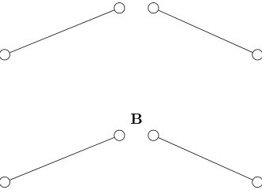
<figcaption class="paper-figure-caption"><b>Fig 1.</b> Figure 1: Three-party networks of parties Al- ice (A), Bob (B), and Charlie (C) where un- derlying bipartite nonclassical resources are available in (a) a star network with B at the center, and (b) a fully connected configu- ration in which all pairs have access to a bipartite nonclassical resource.</figcaption>
</figure>
<figure class="paper-figure-card">
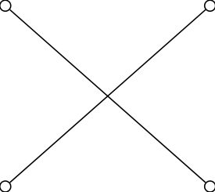
<figcaption class="paper-figure-caption"><b>Fig 2.</b> Figure 2: A four-party network in which each of the (six) pairs of parties shares a bipartite nonclassical resource, but there are no higher-order multipartite entangled resources. Globally shared classical randomness, which may be present, is not depicted.</figcaption>
</figure>
<figure class="paper-figure-card">
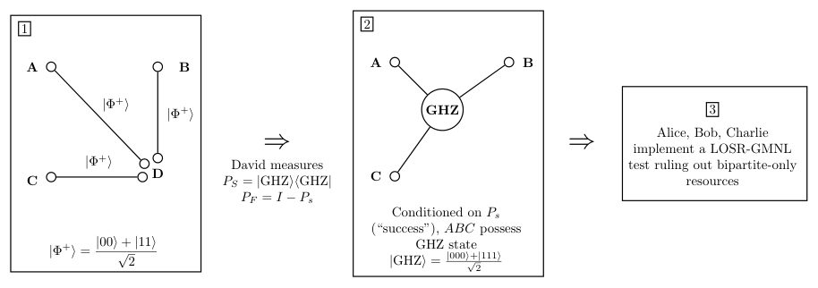
<figcaption class="paper-figure-caption"><b>Fig 3.</b> Figure 3: Scheme for generating a behavior in the QEM paradigm, which will not be replicable in the NSW paradigm.</figcaption>
</figure>
<figure class="paper-figure-card">
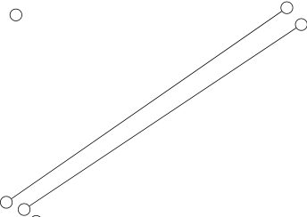
<figcaption class="paper-figure-caption"><b>Fig 4.</b> Figure 5: Conditioned on David measuring and receiving outputs from all of his bipartite resources, these resources that were previously shared with other parties as in Figure 4 reduce to unipartite local random variables.</figcaption>
</figure>
<figure class="paper-figure-card">
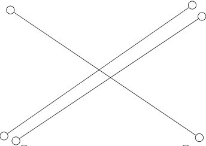
<figcaption class="paper-figure-caption"><b>Fig 5.</b> Figure 4: The bipartite resources of Figure 2 can in general be multiple parallel resources measured in cascaded fashion, with outputs of resources fed as inputs to other resources.</figcaption>
</figure>
</div>

<p><strong>Summary.</strong> The paper establishes a robust quantum advantage of entangled measurements over classical/nonsignaling boxes in multi-party settings. By analyzing specific four-party and generalized $K+2$ party protocols, the authors prove that entanglement allows for correlations violating established inequalities, even when local wirings and global randomness are permitted.</p>
<p><strong>Why it may be interesting.</strong> This work rigorously defines the boundary between quantum nonlocality witnessed by entanglement versus mere super-quantum correlations allowed by local no-signaling constraints, which is fundamental to understanding genuine multipartite quantum resources.</p>
<details>
<summary>Detailed structure</summary>
<p><strong>Main problem.</strong> To determine if quantum entangled measurements provide an advantage over local wirings of nonsignaling nonlocal resources in multipartite networks when bipartite non-classical resources are shared.</p>
<p><strong>Main result.</strong> The authors demonstrate a general separation, showing that for $K+2$ parties, quantum entangled measurements can witness behaviors impossible to achieve using only local wirings on nonsignaling boxes, even with global classical randomness.</p>
<p><strong>Method.</strong> The analysis uses a resource-theoretic approach, comparing the expected values of Bell-type inequalities (like Mao-Bell) achievable via Quantum Entangled Measurements (QEM) versus those constrained by Nonsignaling Boxes (NSW).</p>
<p><strong>Model / system.</strong> The model involves multipartite networks where parties share bipartite nonclassical resources. The comparison is between quantum entanglement/entangled measurements and correlations bounded only by the no-signaling principle.</p>
<p><strong>Key observables.</strong> Violation of Bell inequalities, specifically the Mao-Bell inequality ($    ext{BM}$), which quantifies genuine multi-party nonlocality.</p>
<p><strong>Important parameters / regimes.</strong> The fidelity ($F$) of the shared bipartite quantum states is a key parameter determining the threshold for quantum advantage (e.g., $F > 0.941$).</p>
<p><strong>Assumptions / limitations.</strong> The analysis assumes that the NSW correlations are restricted to local wirings of at-most-$K$-partite nonsignaling resources, and it handles cases with or without globally shared classical randomness.</p>
<p><strong>Figures summary.</strong> Figures illustrate network topologies (star vs. fully connected) for $K=2$ parties, and schemes involving GHZ state projections used to induce the testable multi-party behavior.</p>
<p><strong>Paper structure.</strong> The paper proceeds by establishing a general framework comparing QEM vs. NSW correlations in multipartite settings. It develops specific protocols (e.g., four-party star network) to witness the advantage, proves the separation for arbitrary $K$, and discusses generalizations regarding classical randomness.</p>
</details>
<details>
<summary>Abstract</summary>
<p>Quantum-entangled measurements are known to enable multi-party behaviors that are impossible with unentangled measurements on nonlocal resources, even those that are super-quantum and bound only by the no-signaling principle. This advantage can be witnessed by the entanglement swapping protocol, along with corresponding impossibility results for "nonlocality swapping". However, the advantage assumes the absence of pre-existing nonlocal resources shared by the swapped-to parties; it no longer holds if all pairs of parties are allowed to share bipartite nonlocal resources. Here, we consider a resource-theoretic perspective in which bipartite nonclassical resources are free resources that can be shared by any pair of parties in a multipartite network, and ask whether quantum entangled measurements can still provide an advantage over certain basic measurements, known as wirings, of nonsignaling nonlocal resources. We resolve this question in the affirmative by demonstrating an explicit four-party behavior that can be achieved with bipartite quantum resources subject to entangled measurements, and cannot be achieved if the bipartite resources are allowed to be more general nonsignaling nonlocal "boxes" so long as the measurements are restricted to local wirings, even also allowing for globally shared classical randomness. Furthermore, the argument generalizes: the same separation can be witnessed for K+2 parties with access to K-partite nonlocal resources for any K &gt; 2. We also examine these results in different contexts, such as the star network configurations and scenarios not admitting globally shared classical randomness, further enhancing understanding of the capabilities of entangled measurements in multi-party configurations.</p>
</details>
<p><sub><a href="#top">↑ back to top</a></sub></p>

<p><a id="paper-2606.08995"></a></p>
<h3 id="relativistic-effects-in-spin-correlations-induced-by-qed-scattering-and-wigner-rotations"><a href="http://arxiv.org/abs/2606.08995v1">Relativistic Effects in Spin Correlations Induced by QED Scattering and Wigner Rotations</a></h3>
<p><strong>Authors:</strong> Juan D. Fonseca, B. Hiller, I. G. da Paz, M. Sampaio<br>
<strong>Type:</strong> theory · <strong>Category:</strong> other · <strong>PDF:</strong> <a href="https://arxiv.org/pdf/2606.08995v1">https://arxiv.org/pdf/2606.08995v1</a><br>
<strong>Analysis basis:</strong> full PDF text, analyzed in chunks
<strong>Topic relevance:</strong> 🔥 <code>entanglement &amp; information structure</code> <strong>4/5</strong> · <code>Keldysh / 2PI / non-Gaussian methods</code> <strong>1/5</strong> · <code>correlated / nonlocal dissipation</code> <strong>1/5</strong> · <code>exotic spin models in light-matter</code> <strong>1/5</strong> · <code>non-equilibrium dynamics</code> <strong>1/5</strong></p>
<div class="figure-strip-hint">↔ Scroll figures horizontally</div>
<div class="paper-figures-scroll">
<figure class="paper-figure-card">
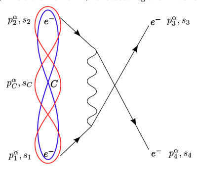
<figcaption class="paper-figure-caption"><b>Fig 1.</b> FIG. 2: Feynman diagrams for Møller scattering.</figcaption>
</figure>
<figure class="paper-figure-card">
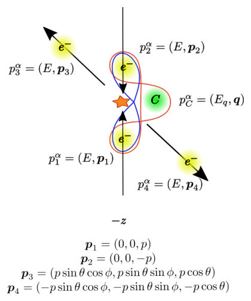
<figcaption class="paper-figure-caption"><b>Fig 2.</b> FIG. 1: Collision diagram for the elastic scattering e−e−→e−e−.</figcaption>
</figure>
<figure class="paper-figure-card">
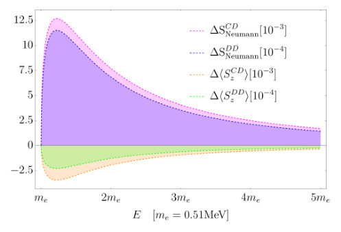
<figcaption class="paper-figure-caption"><b>Fig 3.</b> FIG. 3: Variation of the von Neumann entropies and spin expectation values in the z direction of one electron as functions of the collision energy for the current–dipole and dipole–dipole interactions.</figcaption>
</figure>
<figure class="paper-figure-card">
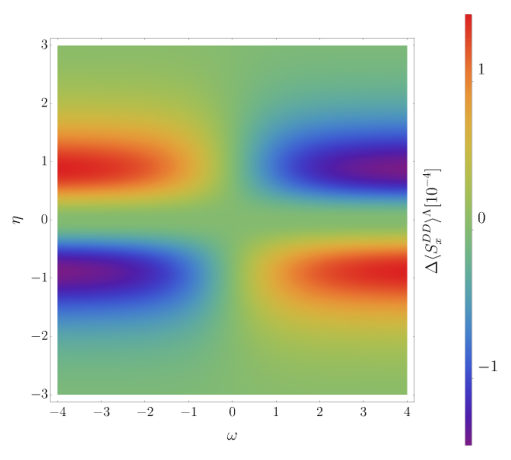
<figcaption class="paper-figure-caption"><b>Fig 4.</b> FIG. 5: Variation of the spin expectacion value in the x direction of one electron as functions of the rapidities for the dipole-dipole interaction.</figcaption>
</figure>
<figure class="paper-figure-card">
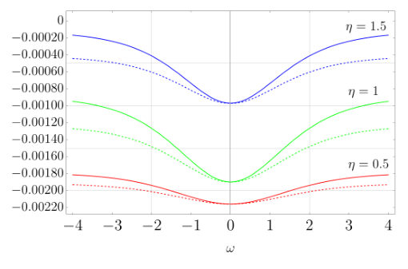
<figcaption class="paper-figure-caption"><b>Fig 5.</b> FIG. 6: Variation of the spin expectation value in the z direction for the current–dipole (solid line) and dipole–dipole (dashed line) interactions as a function of the rapidity ω for selected values of η.</figcaption>
</figure>
</div>

<p><strong>Summary.</strong> This theoretical paper analyzes how spin correlations develop during electron scattering processes by incorporating full relativistic effects, specifically Wigner rotations. Using entanglement entropy as a diagnostic tool, the authors show that while total entropy remains invariant under boosts, local spin observables are frame-dependent. The work provides a detailed framework for understanding quantum correlations in high-energy particle physics.</p>
<p><strong>Why it may be interesting.</strong> The rigorous treatment of spin correlations in relativistic scattering provides a deep link between fundamental QFT symmetries (Lorentz invariance) and quantum information measures (entropy), which is relevant for understanding decoherence mechanisms in high-energy physics.</p>
<details>
<summary>Detailed structure</summary>
<p><strong>Main problem.</strong> The study investigates the relativistic effects, particularly those arising from Wigner rotations, that generate spin correlations between electrons during QED scattering processes like Møller scattering.</p>
<p><strong>Main result.</strong> Dipole-dipole and current-dipole interactions are responsible for generating these spin correlations; while total entropy is Lorentz invariant, local observables like spin expectation values are frame-dependent.</p>
<p><strong>Method.</strong> The authors analyze scattering amplitudes using nonrelativistic approximations and calculate quantum information measures such as the von Neumann entropy of reduced density matrices in different reference frames.</p>
<p><strong>Model / system.</strong> The system involves electron-electron ($e^-e^-$) or three-particle ($e^-e^-C$) interactions governed by Quantum Electrodynamics (QED). The analysis is performed using scattering theory formalism, including the use of density matrices and Lorentz transformations to account for relativistic kinematics.</p>
<p><strong>Key observables.</strong> Spin correlations, von Neumann entropy ($S_{	ext{Neumann}}$), and spin expectation values ($\langle S_{x,y,z} 
angle$) of the outgoing particles.</p>
<p><strong>Important parameters / regimes.</strong> Collision energy/rapidities ($\eta, \omega$), scattering angles ($ heta, \phi$), and the presence of a witness particle C.</p>
<p><strong>Assumptions / limitations.</strong> The analysis is restricted to tree-level contributions in perturbation theory, omitting higher orders in the coupling constant. The initial states are analyzed as both separable and entangled (W-state).</p>
<p><strong>Figures summary.</strong> Figures illustrate collision diagrams for $e^-e^-$ scattering, Feynman diagrams for Møller scattering, and plots showing the variation of von Neumann entropy and spin expectation values versus collision energy or rapidity for different interaction types.</p>
<p><strong>Paper structure.</strong> The paper proceeds by analyzing the process in the center-of-mass frame, deriving amplitudes using nonrelativistic approximations, examining entanglement measures (entropy) under Lorentz boosts involving Wigner rotations, and finally applying this framework to comment on other processes like $e^-e^+ 	o \mu^-\mu^+$</p>
</details>
<details>
<summary>Abstract</summary>
<p>We study the relativistic nature of the interactions that, at tree level, generate spin correlations between two electrons in Møller scattering, as well as in an extended process involving a witness particle $C$. The corresponding processes, $e^{-}e^{-}\rightarrow e^{-}e^{-}$ and $e^{-}e^{-}C\rightarrow e^{-}e^{-}C$, are analyzed both in the center-of-mass frame and, for the former process, in a Lorentz-boosted frame where Wigner rotations arise. It is found that, through a nonrelativistic approximation of the scattering amplitudes, dipole-dipole and current-dipole interactions are responsible for the emergence of these correlations. This is evidenced by the variation of the von Neumann entropy of one electron for initially separable states, and of $C$ for an initially prepared three-particle entangled W-state. In Wigner rotations, the invariance of entropy under local unitary transformations is maintained at the expense of the emergence of quantum coherence in the density matrix at large rapidities. As a consequence, the final states of both particles are evaluated and shown to encode information about the scattering process through their spin expectation values. This framework is then used to comment on the correlations in the inelastic process $e^{-}e^{+}\rightarrowμ^{-}μ^{+}$, for which some research has reported differing results.</p>
</details>
<p><sub><a href="#top">↑ back to top</a></sub></p>

<p><a id="paper-2606.07784"></a></p>
<h3 id="inverse-supersymmetry-in-finite-temperature-bose-fermi-mixtures"><a href="http://arxiv.org/abs/2606.07784v1">Inverse supersymmetry in finite temperature Bose-Fermi mixtures</a></h3>
<p><strong>Authors:</strong> Zachary Gazzillo, Carlos A. R. Sá de Melo<br>
<strong>Type:</strong> theory · <strong>Category:</strong> quantum gases · <strong>PDF:</strong> <a href="https://arxiv.org/pdf/2606.07784v1">https://arxiv.org/pdf/2606.07784v1</a><br>
<strong>Analysis basis:</strong> full PDF text, analyzed in chunks
<strong>Topic relevance:</strong> 🔥 <code>analog quantum simulation</code> <strong>4/5</strong> · <code>Keldysh / 2PI / non-Gaussian methods</code> <strong>1/5</strong> · <code>correlated / nonlocal dissipation</code> <strong>1/5</strong> · <code>driven-dissipative phase transition</code> <strong>1/5</strong></p>
<div class="figure-strip-hint">↔ Scroll figures horizontally</div>
<div class="paper-figures-scroll">
<figure class="paper-figure-card">
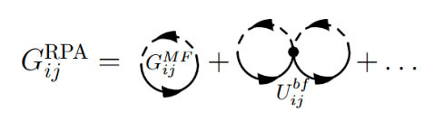
<figcaption class="paper-figure-caption"><b>Fig 1.</b> FIG. 1. The RPA Bose-Fermi correlator GRPA ij , the poles of which form the Goldstino propagator Gq ij, consisting of the mean-field Bose-Fermi correlator GMF ij , and products thereof connected by the Bose-Fermi interacting strength, U bf ij . Here, the solid (dashed) lines represent the independent fermion (boson) propagator.</figcaption>
</figure>
<figure class="paper-figure-card">
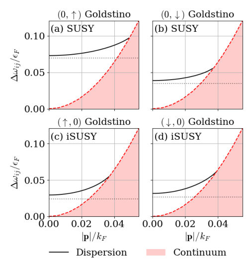
<figcaption class="paper-figure-caption"><b>Fig 2.</b> FIG. 2. Plots of the energy difference ∆ωij = ω −ζij(0, 0) between the energy of excitations ω and the zero-momentum particle-hole continuum boundary ζij(0, 0) versus momentum modulus |p|. In each plot, ϵF and kF represent the Fermi en- ergy and Fermi momentum, respectively. We use parameters of Tab. I to illustrate SUSY in panels (a) and (b), as well as iSUSY in panels (c) and (d). The solid black lines represent the Goldstino dispersions ω = Dij(p), while the shaded pink area describes the particle-hole continuum with the dashed red line being its boundary. Finally, the dotted gray line is the approximate zero-momentum solution ω = Dij(0) ≈Ωij.</figcaption>
</figure>
<figure class="paper-figure-card">
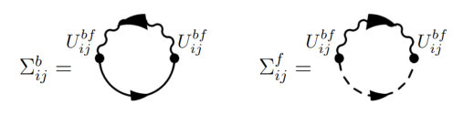
<figcaption class="paper-figure-caption"><b>Fig 3.</b> FIG. 3. The self-energy diagrams Σb(f) ij contributing to the energy of a boson (fermion) in spin i (j) emerging due to the existence of the (i, j) Goldstino with propagator Gq ij repre- sented by the wavy line. The solid (dashed) lines describe the mean-field corrected fermion (boson) propagator.</figcaption>
</figure>
<figure class="paper-figure-card">
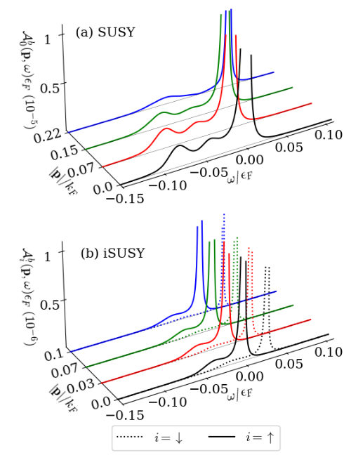
<figcaption class="paper-figure-caption"><b>Fig 4.</b> FIG. 4. Plots of spectral functions Ab i(p, ω) for all present species of bosons. The SUSY case is shown in (a), and the iSUSY case is illustrated in (b).</figcaption>
</figure>
<figure class="paper-figure-card">
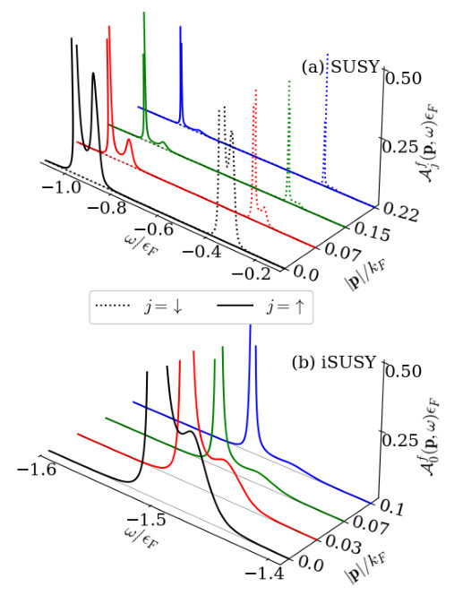
<figcaption class="paper-figure-caption"><b>Fig 5.</b> FIG. 5. Plots of spectral functions Af j (p, ω) for all present species of fermions. The SUSY case is shown in (a), and the iSUSY case is illustrated in (b).</figcaption>
</figure>
</div>

<p><strong>Summary.</strong> The paper theoretically explores how breaking generalized supersymmetry in Bose-Fermi mixtures leads to the appearance of fermionic Goldstino modes. It rigorously distinguishes between standard and inverse SUSY by analyzing their distinct signatures in measurable spectral functions. The findings propose specific radio-frequency spectroscopy experiments using alkali atom mixtures to detect these exotic quantum phenomena.</p>
<p><strong>Why it may be interesting.</strong> This work connects abstract concepts from high-energy physics (supersymmetry) directly to observable phenomena in ultracold atomic systems, providing a concrete theoretical framework for novel spectroscopic measurements.</p>
<details>
<summary>Detailed structure</summary>
<p><strong>Main problem.</strong> The paper investigates the emergence of fermionic Goldstino modes due to the breaking of generalized supersymmetry (gSUSY) in Bose-Fermi mixtures.</p>
<p><strong>Main result.</strong> It distinguishes between standard SUSY and inverse SUSY (iSUSY), showing that iSUSY predicts unique, experimentally distinguishable features in the spectral functions of bosonic species.</p>
<p><strong>Method.</strong> The analysis uses Random Phase Approximation (RPA) to calculate correlators and derive Goldstino dispersion relations, comparing theoretical predictions with spectroscopic measurements.</p>
<p><strong>Model / system.</strong> The system is a nearly degenerate Bose-Fermi mixture of ultracold quantum gases (specifically $^{39}	ext{K}$ bosons and $^{40}	ext{K}$ fermions) possessing internal spin states (pseudospin).</p>
<p><strong>Key observables.</strong> Goldstino dispersion $\omega = D_{ij}(p)$, bosonic/fermionic spectral functions $A(p, \omega)$ measurable via RF or microwave spectroscopy.</p>
<p><strong>Important parameters / regimes.</strong> The analysis depends on the relative strengths of interactions ($U_{bf}$) and gSUSY breaking parameters ($\Delta\mu_{ij}, \chi$).</p>
<p><strong>Assumptions / limitations.</strong> Approximations include using RPA, expanding in small symmetry-breaking parameters ($\chi$), and assuming uniform particle density.</p>
<p><strong>Figures summary.</strong> Figures illustrate the Bose-Fermi correlator (Fig 1), the energy difference $\Delta\omega_{ij}$ vs. momentum for SUSY/iSUSY (Fig 2), self-energy contributions (Fig 3), and spectral functions $A(p, \omega)$ showing distinct features for both SUSY and iSUSY cases (Fig 4, Fig 5).</p>
<p><strong>Paper structure.</strong> The paper builds from defining gSUSY in the Hamiltonian to using RPA to find Goldstino poles. It then systematically compares the predictions of standard SUSY versus inverse SUSY by analyzing how these symmetries manifest in the momentum-dependent spectral functions.</p>
</details>
<details>
<summary>Abstract</summary>
<p>We investigate nearly degenerate Bose-Fermi mixtures and show that the breaking of generalized supersymmetry (gSUSY) between bosons and fermions, with up to two internal states, manifests itself through the emergence of fermionic Goldstino modes with up to four flavors. In particular, we draw a distinction between typical supersymmetry (SUSY), where bosons have pseudospin 0 and fermions have pseudospin 1/2, and inverse supersymmetry (iSUSY), where bosons have pseudospin 1/2 and fermions have pseudospin 0. In such systems, we highlight that the Goldstino pseudospin is carried by either its constituent fermion (SUSY) or boson (iSUSY). We then distinguish between these two cases by depicting their differing effects on the spectral functions of the bosonic and fermionic atomic species. Lastly, we propose radio-frequency- or microwave-spectroscopy experiments, analogous to momentum (angular) resolved photoemission in condensed matter physics, to measure the pseudospin-dependent spectral functions and detect the emergence of Goldstino modes in mixtures of $^{39}$K and $^{40}$K.</p>
</details>
<p><sub><a href="#top">↑ back to top</a></sub></p>

<p><a id="paper-2606.07852"></a></p>
<h3 id="affine-filtering-measurements-and-their-applications-to-quantum-decoding"><a href="http://arxiv.org/abs/2606.07852v1">Affine Filtering Measurements and Their Applications to Quantum Decoding</a></h3>
<p><strong>Authors:</strong> Avijit Mandal, Noah Shutty, Henry D. Pfister, Stephen P. Jordan<br>
<strong>Type:</strong> theory · <strong>Category:</strong> quantum information and computing · <strong>PDF:</strong> <a href="https://arxiv.org/pdf/2606.07852v1">https://arxiv.org/pdf/2606.07852v1</a><br>
<strong>Analysis basis:</strong> full PDF text, analyzed in chunks
<strong>Topic relevance:</strong> 🔥 <code>quantum measurements</code> <strong>4/5</strong> · <code>measurement-induced transitions</code> <strong>1/5</strong></p>
<div class="figure-strip-hint">↔ Scroll figures horizontally</div>
<div class="paper-figures-scroll">
<figure class="paper-figure-card">
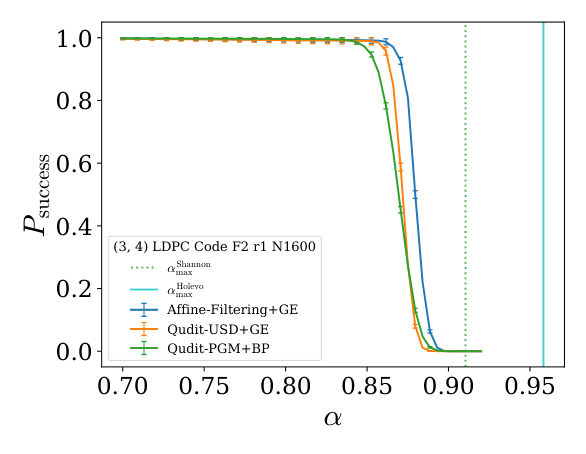
<figcaption class="paper-figure-caption"><b>Fig 1.</b> Figure 1: Performance Comparison for (3,4) Regular LDPC Codes on F2 and r = 1 with N = 1600</figcaption>
</figure>
<figure class="paper-figure-card">
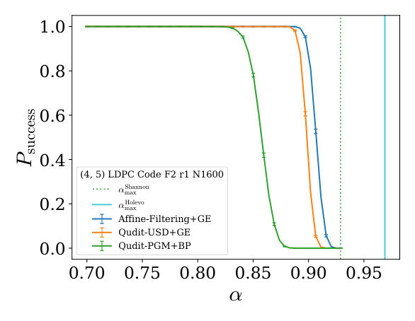
<figcaption class="paper-figure-caption"><b>Fig 2.</b> Figure 2: Performance Comparison for (4,5) Regular LDPC Codes on F2 and r = 1 with N = 1600</figcaption>
</figure>
<figure class="paper-figure-card">
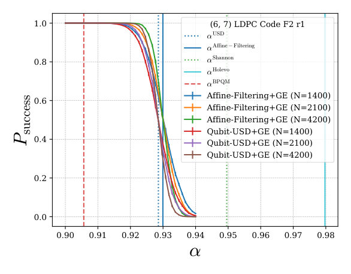
<figcaption class="paper-figure-caption"><b>Fig 3.</b> Figure 3: Comparison between affine-filtering+GE and qubit USD+GE decoding for (6,7) regular LDPC codes</figcaption>
</figure>
<figure class="paper-figure-card">
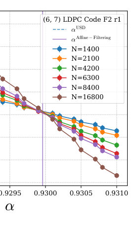
<figcaption class="paper-figure-caption"><b>Fig 4.</b> Figure 4: Threshold plot for affine-filtering+GE decoding for (6,7) regular LDPC codes</figcaption>
</figure>
<figure class="paper-figure-card">
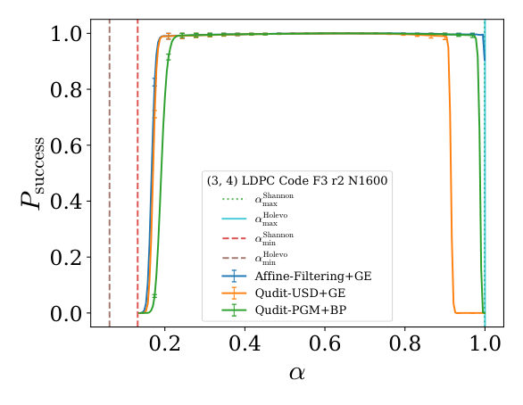
<figcaption class="paper-figure-caption"><b>Fig 5.</b> Figure 5: Performance Comparison for (3,4) Regular LDPC Codes on F3 and r = 2 with N = 1600</figcaption>
</figure>
</div>

<p><strong>Summary.</strong> This work introduces affine filtering measurements as an advanced tool for decoding classical linear codes transmitted via pure-state quantum channels. By mathematically reducing the optimal measurement design from a difficult Semidefinite Program to a solvable Linear Program using character theory, the authors provide a powerful new quantum decoding framework. Simulations confirm that this method significantly outperforms existing symbol-wise decoding techniques on structured codes like LDPC.</p>
<p><strong>Why it may be interesting.</strong> The rigorous mathematical reduction of a complex quantum optimization problem (SDP) into a tractable linear program is a powerful technique applicable across quantum information theory, providing concrete tools for designing optimal measurements.</p>
<details>
<summary>Detailed structure</summary>
<p><strong>Main problem.</strong> Developing efficient quantum decoding methods for classical linear codes transmitted over pure-state classical-quantum (CQ) channels.</p>
<p><strong>Main result.</strong> The proposed affine filtering measurement combined with Gaussian elimination outperforms symbol-wise USD and PGM decoders in simulations on i.i.d. pure-state channels for LDPC codes.</p>
<p><strong>Method.</strong> The optimal measurement design is formulated as a Semidefinite Program (SDP) which the authors successfully reduce to an equivalent Linear Program (LP) using character theory and symmetry arguments.</p>
<p><strong>Model / system.</strong> The system models quantum information processing where classical linear codes are encoded into pure-state quantum channels. The core mathematical tools involve group characters, SDP/LP optimization, and measurement operators (POVMs).</p>
<p><strong>Key observables.</strong> Success probability ($P_{	ext{success}}$) of decoding; the expected number of recovered linear equations.</p>
<p><strong>Important parameters / regimes.</strong> Code parameters like $(k, D)$ for LDPC codes; channel noise parameter $\alpha$; field size $q$.</p>
<p><strong>Assumptions / limitations.</strong> The derivation relies heavily on exploiting symmetries (coset symmetry) to reduce the SDP to an LP, and in some cases, passing to a limit ($\epsilon 	o 0$) by perturbing the state family.</p>
<p><strong>Figures summary.</strong> Figures compare the success probability thresholds of the affine-filtering+GE decoder against qubit-wise USD/PGM decoders for various regular LDPC codes. Table 2 compares the expected number of linear equations recovered by different measurement types.</p>
<p><strong>Paper structure.</strong> The paper progresses from defining the problem (USD measurements) to developing the mathematical machinery: first, establishing the SDP formulation; second, using symmetry arguments and character theory to reduce this SDP to an equivalent LP; finally, applying this LP framework to simulate and compare decoding performance on specific LDPC codes.</p>
</details>
<details>
<summary>Abstract</summary>
<p>Unambiguous state discrimination (USD) measurements are attractive because outcomes are either marked as conclusive (i.e., error free) or inconclusive (i.e., erased). We study affine filtering measurements, a structured variant of USD for decoding classical linear codes over pure-state classical-quantum channels, where a conclusive outcome identifies an affine subspace containing the transmitted codeword and an inconclusive outcome is treated as an erasure. For a group-covariant indexing of pure-state codewords, we show that the optimal design of affine filtering measurements is a semidefinite program that can be reduced to a linear program via character-based diagonalization. We use the resulting measurement to build a quantum decoding framework for local codes, and we demonstrate (via simulations on regular LDPC codes from Gallager ensembles using single parity check local constraints) that affine filtering based decoding can outperform symbol-wise USD and symbol-wise pretty good measurement based decoding methods on i.i.d. pure-state channels. In an independent and concurrent work, Buzet and Chailloux study similar fine-grained USD measurements for symmetric families of states. Their focus is on the code-agnostic setting whereas our focus is on code-aware constructions and decoding.</p>
</details>
<p><sub><a href="#top">↑ back to top</a></sub></p>

<p><a id="paper-2606.08561"></a></p>
<h3 id="a-five-qubit-1-resistant-graph-state-and-stabilizer-marginal-certificates"><a href="http://arxiv.org/abs/2606.08561v1">A five-qubit 1-resistant graph state and stabilizer marginal certificates</a></h3>
<p><strong>Authors:</strong> Zicheng Han, Wanchen Zhang, Xiande Zhang<br>
<strong>Type:</strong> theory · <strong>Category:</strong> quantum information and computing · <strong>PDF:</strong> <a href="https://arxiv.org/pdf/2606.08561v1">https://arxiv.org/pdf/2606.08561v1</a><br>
<strong>Analysis basis:</strong> full PDF text, analyzed in chunks
<strong>Topic relevance:</strong> 🔥 <code>entanglement &amp; information structure</code> <strong>4/5</strong></p>
<div class="figure-strip-hint">↔ Scroll figures horizontally</div>
<div class="paper-figures-scroll">
<figure class="paper-figure-card">
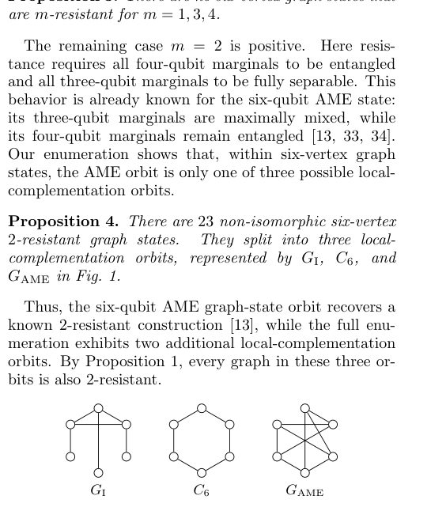
<figcaption class="paper-figure-caption"><b>Fig 1.</b> FIG. 1. Unlabeled representatives of the three local- complementation orbits of six-vertex 2-resistant graph states. The right representative GAME is a graph-state realization of the known six-qubit AME 2-resistant state.</figcaption>
</figure>
</div>

<p><strong>Summary.</strong> This paper rigorously studies $m$-resistant states, defining resistance based on how the state remains entangled after losing a few particles but becomes separable after losing slightly more. Using graph states and stabilizer formalism, the authors classify these robust states for small qubit numbers and prove general non-existence results for large cycle graphs.</p>
<p><strong>Why it may be interesting.</strong> This work provides rigorous mathematical tools (stabilizer methods, NPT witnesses) to quantify entanglement robustness, which is crucial for designing fault-tolerant quantum communication protocols or understanding resource limitations in quantum computation.</p>
<details>
<summary>Detailed structure</summary>
<p><strong>Main problem.</strong> The paper characterizes the robustness of multipartite entanglement, defined by $m$-resistance, in quantum states under particle loss.</p>
<p><strong>Main result.</strong> It establishes that the five-cycle graph state $|C_5\rangle$ is a 1-resistant state for five qubits, and provides detailed classification results showing specific existence patterns for small numbers of qubits ($N=5, 6, 7$).</p>
<p><strong>Method.</strong> The authors develop a stabilizer-subgroup method using local stabilizers to certify separability and Negative Partial Transpose (NPT) witnesses to certify entanglement in reduced marginal states.</p>
<p><strong>Model / system.</strong> The study focuses on graph states $|G\rangle$ defined on $N$ qubits, where the resistance property requires specific reduced density matrices (marginals) corresponding to losing $m$ or $m+1$ particles to exhibit distinct entanglement properties.</p>
<p><strong>Key observables.</strong> Entanglement status of marginal states ($
ho_{ar{J}}$), measured via NPT witnesses; separability confirmed by local stabilizer conditions.</p>
<p><strong>Important parameters / regimes.</strong> The resistance parameter $m$, the number of qubits $N$ (tested for 5, 6, and 7), and the structure of the underlying graph $G$.</p>
<p><strong>Assumptions / limitations.</strong> The analysis relies on sufficient conditions derived from local stabilizers for separability, and the classification is restricted to stabilizer/graph states.</p>
<p><strong>Figures summary.</strong> Not specified in detail, but the notes reference tables summarizing existence results for $(N, m)$ pairs and figures showing representatives of found orbits (e.g., three orbits for 6-vertex 2-resistant states).</p>
<p><strong>Paper structure.</strong> The paper first defines $m$-resistance using particle loss analysis. It then develops a formal stabilizer framework to test this property on graph state marginals, culminating in exhaustive classification results for small N and proving non-existence for large cycle graphs.</p>
</details>
<details>
<summary>Abstract</summary>
<p>We study particle-loss resistant entanglement within the framework of stabilizer and graph states. A pure state is \(m\)-resistant if it remains entangled after the loss of any \(m\) particles and becomes fully separable after the loss of any \(m+1\) particles. The smallest previously unresolved qubit case was the existence of a five-qubit \(1\)-resistant pure state, which is resolved here by the five-cycle graph state \(\ket{C_5}\). A stabilizer-subgroup method is also developed for verifying \(m\)-resistance in graph states, using local stabilizers to certify full separability and exact negative partial transpose~(NPT) witnesses to certify entanglement.   Applying this to all graph states associated with non-isomorphic graphs on five, six, and seven vertices, we obtain a graph state classification up to local Clifford equivalence, which also classifies stabilizer states   up to local Clifford equivalence. Thus, the five-qubit \(1\)-resistant stabilizer states are exactly the local Clifford class of \(C_5\). Six-qubit \(2\)-resistant stabilizer states exist in three distinct local Clifford classes, whereas no seven-qubit stabilizer state is \(m\)-resistant for any nonzero admissible \(m\). Finally, we prove that the cycle graph states \(\ket{C_N}\) with \(N\ge 7\) are not \(m\)-resistant for any \(0\le m\le N-2\).</p>
</details>
<p><sub><a href="#top">↑ back to top</a></sub></p>

<p><a id="paper-2606.09469"></a></p>
<h3 id="hardware-aware-qaoa-for-honeypot-traffic-partitioning-on-100-qubit-ibm-quantum-processors"><a href="http://arxiv.org/abs/2606.09469v1">Hardware-Aware QAOA for Honeypot Traffic Partitioning on 100+ Qubit IBM Quantum Processors</a></h3>
<p><strong>Authors:</strong> Cameron V. Cogburn, Casimer DeCusatis, Evan Spillane<br>
<strong>Type:</strong> experiment · <strong>Category:</strong> quantum information and computing · <strong>PDF:</strong> <a href="https://arxiv.org/pdf/2606.09469v1">https://arxiv.org/pdf/2606.09469v1</a><br>
<strong>Analysis basis:</strong> full PDF text, analyzed in chunks
<strong>Topic relevance:</strong> 🔥 <code>QC/QI experiment</code> <strong>4/5</strong></p>
<div class="figure-strip-hint">↔ Scroll figures horizontally</div>
<div class="paper-figures-scroll">
<figure class="paper-figure-card">
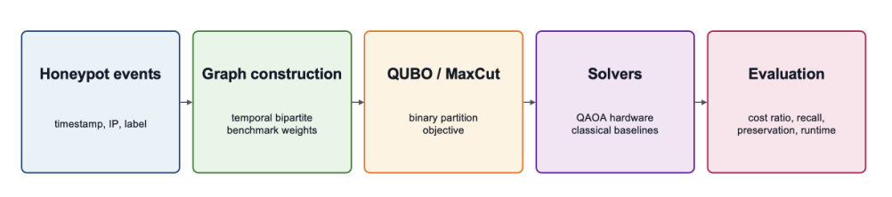
<figcaption class="paper-figure-caption"><b>Fig 1.</b> Fig. 1. Workflow used in this study. Labeled honeypot event traces are converted into temporal bipartite MaxCut benchmark graphs, solved with QAOA hardware runs and classical baselines, and evaluated with both optimization and security metrics.</figcaption>
</figure>
<figure class="paper-figure-card">
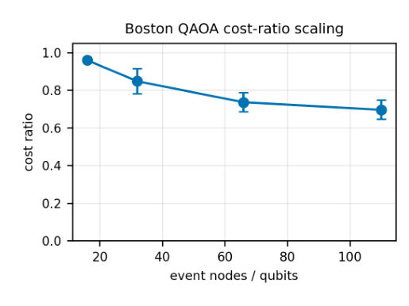
<figcaption class="paper-figure-caption"><b>Fig 2.</b> Fig. 2. Boston QAOA cost ratio scaling over H16, H32, H66, and H110. Error bars indicate sample standard deviation over five seeds (124–128) for H16–H66 and six seeds (124–129) for H110.</figcaption>
</figure>
<figure class="paper-figure-card">
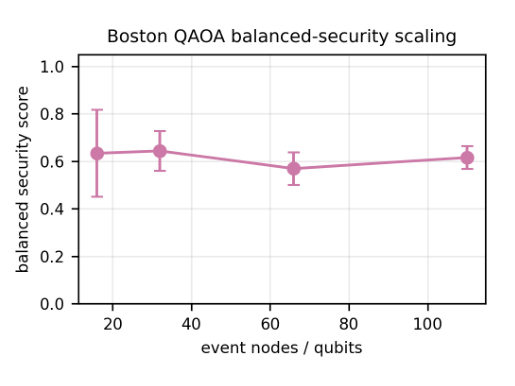
<figcaption class="paper-figure-caption"><b>Fig 3.</b> Fig. 3. Balanced security score for the Boston QAOA scaling ladder. This metric averages attack recall and benign preservation.</figcaption>
</figure>
<figure class="paper-figure-card">
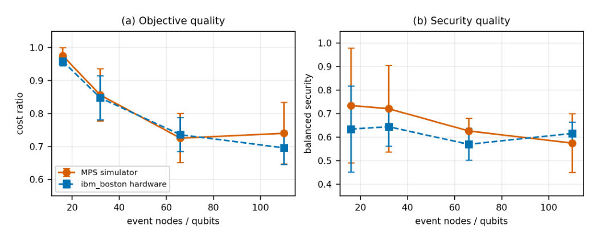
<figcaption class="paper-figure-caption"><b>Fig 4.</b> Fig. 4. Noiseless finite-shot MPS QAOA baseline compared with ibm_boston hardware QAOA. Both workflows use p = 1, COBYLA, 1024 shots, and 15 optimizer evaluations. Markers show means and error bars show sample standard deviations. The MPS baseline and the Boston hardware both use five seeds (124–128) for H16, H32, and H66, while H110 included an additional sixth seed (129).</figcaption>
</figure>
<figure class="paper-figure-card">
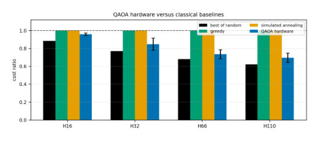
<figcaption class="paper-figure-caption"><b>Fig 5.</b> Fig. 5. QAOA hardware cost ratios compared with best of 1000 random, greedy local search, and simulated annealing. Greedy local search and simulated annealing reach the class-defined reference objective on all four labeled temporal bipartite benchmark graphs.</figcaption>
</figure>
</div>

<p><strong>Summary.</strong> This work develops a comprehensive hardware benchmark framework to test using QAOA for solving traffic partitioning problems derived from honeypot network data. By running the algorithm on multiple IBM quantum processors, the authors demonstrate that while shallow circuits are feasible at utility scale, backend architecture and routing overhead significantly impact performance metrics beyond just the optimization objective.</p>
<p><strong>Why it may be interesting.</strong> While focused on cybersecurity, the rigorous benchmarking of quantum circuit overhead (depth, gate counts) across different physical architectures for a complex optimization problem provides valuable data for understanding near-term NISQ device limitations.</p>
<details>
<summary>Detailed structure</summary>
<p><strong>Main problem.</strong> Mitigating Denial-of-Service (DoS) attacks by separating malicious honeypot traffic from benign traffic, modeled as a weighted MaxCut problem.</p>
<p><strong>Main result.</strong> The study establishes a hardware feasibility benchmark showing that shallow QAOA can execute real traffic partitioning workloads at the utility scale, though it does not claim quantum advantage due to classical solvability of benchmarks.</p>
<p><strong>Method.</strong> Variational Quantum Algorithms (QAOA) are applied to QUBO formulations derived from labeled temporal bipartite graphs representing honeypot traffic events.</p>
<p><strong>Model / system.</strong> The system uses current IBM superconducting quantum processors (e.g., ibm_boston, ibm_miami) for execution on benchmark graphs up to 110 nodes. The problem is formulated as maximizing a weighted MaxCut objective.</p>
<p><strong>Key observables.</strong> MaxCut cost ratio ($
ho_C$), Attack Recall, Benign Preservation, Quarantine Precision, Balanced Security Score, Transpiled Depth, Two-Qubit Gate Counts, and Observed Runtime.</p>
<p><strong>Important parameters / regimes.</strong> Graph sizes (16 to 110 nodes), QAOA depth ($p=1$ fixed ansatz), and specific IBM quantum backend architectures.</p>
<p><strong>Assumptions / limitations.</strong> The benchmark graphs are intentionally simple enough that classical heuristics can solve them, meaning the results do not constitute a claim of quantum advantage. The analysis requires reporting optimization quality separately from security metrics.</p>
<p><strong>Figures summary.</strong> Figures compare QAOA cost ratios and balanced security scores across scaling graph sizes (H16-H110) and show architecture-dependent routing overheads for the largest instance (H110).</p>
<p><strong>Paper structure.</strong> The paper follows a workflow: defining the DoS mitigation problem as MaxCut $\rightarrow$ constructing labeled temporal bipartite benchmarks $\rightarrow$ executing QAOA on multiple IBM backends $\rightarrow$ comparing results against classical heuristics and analyzing hardware overheads.</p>
</details>
<details>
<summary>Abstract</summary>
<p>Denial-of-service (DoS) and distributed denial-of-service (DDoS) mitigation requires separating malicious traffic from benign traffic while minimizing disruption to legitimate users. Prior work proposed mapping honeypot traffic partitioning to a weighted MaxCut problem and solving the resulting graphs with variational quantum algorithms. We extend this proof of principle direction with a reproducible event-level honeypot-to-QUBO pipeline, labeled temporal bipartite benchmark graphs with 16, 32, 66, and 110 event nodes, QAOA executions on IBM quantum hardware, classical heuristic baselines, a noiseless matrix product state reference, and a routing overhead analysis across quantum processor architectures. The largest benchmark is a 110-node, 181-edge instance executed on three IBM backends. Our results show that a shallow QAOA can execute real traffic partitioning workloads at the utility scale, while backend architecture and routing overhead affect objective quality, security metrics, and observed runtime. Because simple classical heuristics can solve the current labeled benchmark graphs, these experiments are not a quantum advantage claim. Instead, we deliberately use a fixed, shallow QAOA implementation to enable controlled comparisons across problem sizes and hardware architectures. This work establishes a hardware feasibility and architecture benchmark framework, and demonstrates that MaxCut cost, security quality, routing overhead, and runtime must be reported as separate metrics for cybersecurity relevant quantum optimization.</p>
</details>
<p><sub><a href="#top">↑ back to top</a></sub></p>

<p><a id="paper-2606.08478"></a></p>
<h3 id="impact-of-spontaneous-emission-on-spin-squeezed-quantum-sensors"><a href="http://arxiv.org/abs/2606.08478v1">Impact of spontaneous emission on spin-squeezed quantum sensors</a></h3>
<p><strong>Authors:</strong> Jinyang Li, Selim M. Shahriar<br>
<strong>Type:</strong> theory · <strong>Category:</strong> other · <strong>PDF:</strong> <a href="https://arxiv.org/pdf/2606.08478v1">https://arxiv.org/pdf/2606.08478v1</a><br>
<strong>Analysis basis:</strong> full PDF text, analyzed in chunks
<strong>Topic relevance:</strong> <code>correlated / nonlocal dissipation</code> <strong>3/5</strong> · <code>methods for driven-dissipative</code> <strong>3/5</strong> · <code>quantum measurements</code> <strong>3/5</strong> · <code>Keldysh / 2PI / non-Gaussian methods</code> <strong>2/5</strong> · <code>exotic spin models in light-matter</code> <strong>2/5</strong> · <code>measurement-induced transitions</code> <strong>2/5</strong> · <code>spintronics-quantum-optics interface</code> <strong>2/5</strong> · <code>Dicke superradiance</code> <strong>1/5</strong> · <code>analog quantum simulation</code> <strong>1/5</strong> · <code>correlated cavity matter</code> <strong>1/5</strong> · <code>driven-dissipative phase transition</code> <strong>1/5</strong> · <code>entanglement &amp; information structure</code> <strong>1/5</strong> · <code>non-equilibrium dynamics</code> <strong>1/5</strong></p>
<div class="figure-strip-hint">↔ Scroll figures horizontally</div>
<div class="paper-figures-scroll">
<figure class="paper-figure-card">
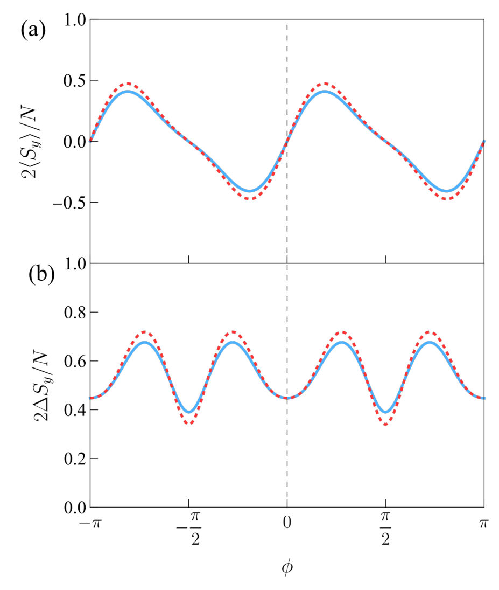
<figcaption class="paper-figure-caption"><b>Fig 1.</b> Figure 1. Signal and quantum noise level of the CESP as a function of the phase shift φ for 5 N = and 6 µ π = (the optimal value of µ for the CESP). The blue solid curves show the results for 0.2χ Γ = and the red dashed for 0 Γ = . The vertical black dashed line marks the operation point. (a) Signal of the CESP, which is the expectation value of the measured operator y S , normalized to the maximum amplitude 2 N . (b) Quantum noise</figcaption>
</figure>
<figure class="paper-figure-card">
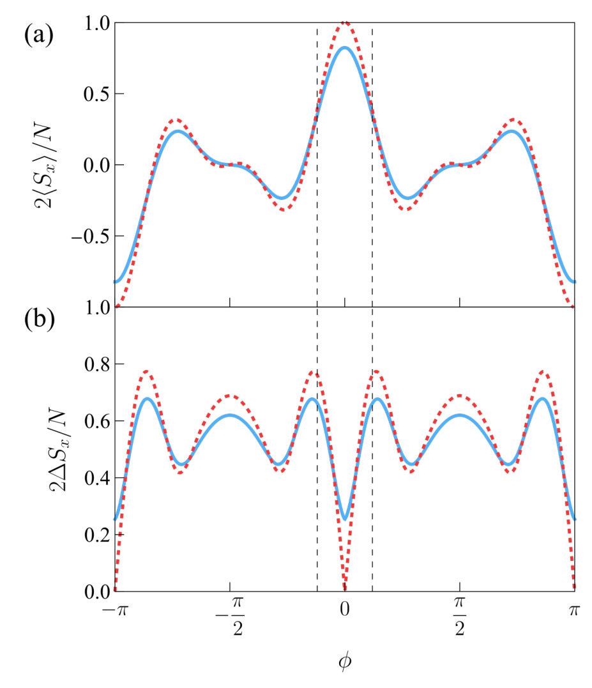
<figcaption class="paper-figure-caption"><b>Fig 2.</b> Figure 2. Signal and quantum noise level of the GESP as a function of the phase shift φ at 5 N = , 0 0.1χ Γ = , and 0.31 µ π = (a value arbitrarily chosen). The blue solid curves show the results for 0.2χ Γ = and the red dashed for 0 Γ = . The vertical black dashed lines mark the operation points. (a) Signal of the GESP, which is the expectation value of the measured operator x S , normalized to the maximum amplitude 2 N . (b) Quantum noise level of the GESP, which is the standard deviation of the measured operator x S , normalized to the maximum noise level 2 N .</figcaption>
</figure>
<figure class="paper-figure-card">
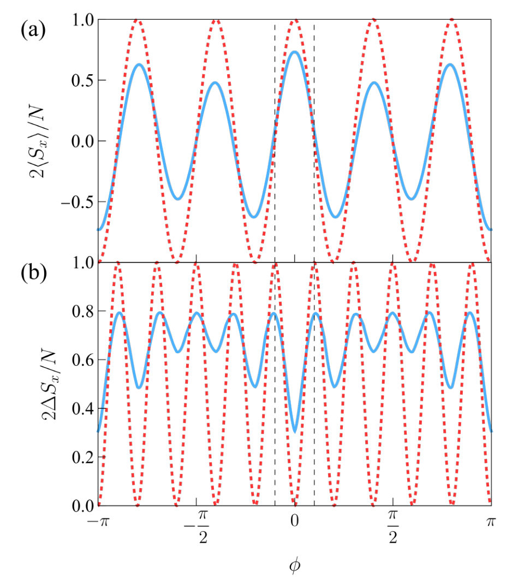
<figcaption class="paper-figure-caption"><b>Fig 3.</b> Figure 3. Signal and quantum noise level of the SCSP as a function of the phase shift φ for 5 N = . The blue solid curves show the results for 0.2χ Γ = and the red dashed for 0 Γ = . The vertical black dashed lines mark the operation points. (a) Signal of the SCSP, which is the expectation value of the measured operator x S , normalized to the maximum amplitude 2 N . (b) Quantum noise level of the GESP, which is the standard deviation of the measured operator x S , normalized to the maximum noise level 2 N .</figcaption>
</figure>
<figure class="paper-figure-card">
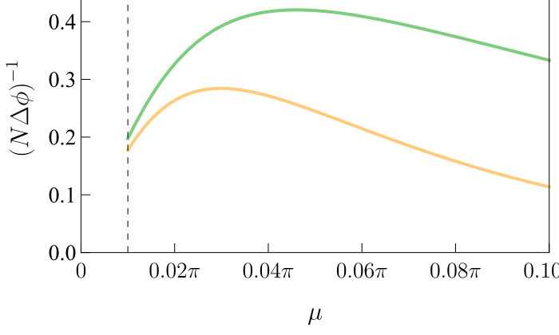
<figcaption class="paper-figure-caption"><b>Fig 4.</b> Figure 4. Lower limit of the GESP sensitivity normalized to the Heisenberg limit as a function of µ for 4 C = (green) and 1 C = (orange) in the presence of excess detection noise at a level of 0.1N .</figcaption>
</figure>
</div>

<p><strong>Summary.</strong> This paper analyzes the impact of spontaneous emission on spin-squeezed quantum sensors using ${}^{88}	ext{Sr}$ atoms. By comparing different squeezing protocols, the authors demonstrate that the Generalized ESP (GESP) is superior to conventional methods because it resists SE better and exhibits an unexpected suppression of quantum noise due to the decay process.</p>
<p><strong>Why it may be interesting.</strong> This work directly addresses open quantum system dynamics in atomic sensing, providing quantitative comparisons between advanced quantum measurement protocols under realistic decoherence channels like spontaneous emission.</p>
<details>
<summary>Detailed structure</summary>
<p><strong>Main problem.</strong> The study investigates how spontaneous emission (SE) degrades the performance of spin-squeezed quantum sensors based on atomic ensembles.</p>
<p><strong>Main result.</strong> The Generalized Echo Squeezing Protocol (GESP) is shown to be significantly more resistant to SE than the Conventional ESP (CESP), and unexpectedly, SE can suppress quantum noise in GESP.</p>
<p><strong>Method.</strong> The authors use analytical derivations and numerical simulations based on solving the master equation for the density operator under the influence of SE Lindblad operators.</p>
<p><strong>Model / system.</strong> The system involves atomic sensors using One-Axis-Twist Squeezing (OATS) protocols, specifically modeled with ${}^{88}	ext{Sr}$ atoms to simplify Zeeman substates. The evolution is governed by a master equation incorporating spontaneous emission and squeezing operations.</p>
<p><strong>Key observables.</strong> Signal contrast (coherence), quantum noise level (variance of spin operators), and the comparison between different sensing protocols (CESP, GESP).</p>
<p><strong>Important parameters / regimes.</strong> The single-atom cooperativity ($C$), the decay rate ($\Gamma$) associated with SE, and the squeezing parameter $\mu$.</p>
<p><strong>Assumptions / limitations.</strong> The analysis focuses on simplifying the system by using ${}^{88}	ext{Sr}$ to limit Zeeman substates; some derivations assume dissipation is purely dephasing.</p>
<p><strong>Figures summary.</strong> Figures compare signal contrast and quantum noise levels for CESP, GESP, and SCSP under varying SE strengths ($\Gamma$), demonstrating superior performance for GESP.</p>
<p><strong>Paper structure.</strong> The paper builds by first establishing the challenge of SE in OATS sensors. It then compares protocols (CESP vs GESP) using analytical derivations and simulations to quantify SE-induced signal contrast loss and noise suppression, concluding with the superiority of GESP.</p>
</details>
<details>
<summary>Abstract</summary>
<p>The echo squeezing protocols (ESPs) are techniques that amplify the phase shift in a quantum sensor with one-axis-twist squeezing (OATS). For atomic sensors, spontaneous emission (SE) in the OATS operations is an important imperfection, which, however, is prohibitively difficult to study. SE can transfer atoms to all the Zeeman substates, making the number of relevant collective states excessively large. In this paper, we focus on a relatively simple isotope, namely Sr-88, which only has one Zeeman substate in each of the two ground states. Nevertheless, studying the effect of SE is still challenging because SE will populate all collective states, either symmetric or asymmetric, thus putting the ensemble into a mixed state. Based on analytical derivation and numerical simulations, we conclude that the GESP is more resistant to SE than the conventional echo squeezing protocol (CESP). This is another advantage of the GESP that has not been realized formerly. We also find that for the GESP employing Sr-88, the SE-induced reduction in the signal contrast is the same as that for a Ramsey protocol without squeezing and the quantum noise is suppressed by SE. This is an unexpectedly favorable result. The SE-induced suppression of quantum noise constitutes a previously unrecognized effect that challenges both earlier conclusions and intuitive expectations.</p>
</details>
<p><sub><a href="#top">↑ back to top</a></sub></p>

<p><a id="paper-2606.09756"></a></p>
<h3 id="perturbative-contrastive-physical-learning"><a href="http://arxiv.org/abs/2606.09756v1">Perturbative Contrastive Physical Learning</a></h3>
<p><strong>Authors:</strong> Kyungeun Kim, Amanuel Anteneh, Israel Klich, Olivier Pfister, J. M. Schwarz<br>
<strong>Type:</strong> both · <strong>Category:</strong> disordered systems and neural networks · <strong>PDF:</strong> <a href="https://arxiv.org/pdf/2606.09756v1">https://arxiv.org/pdf/2606.09756v1</a><br>
<strong>Analysis basis:</strong> full PDF text, analyzed in chunks
<strong>Topic relevance:</strong> <code>analog quantum simulation</code> <strong>3/5</strong> · <code>measurement-induced transitions</code> <strong>3/5</strong> · <code>methods for driven-dissipative</code> <strong>3/5</strong> · <code>quantum measurements</code> <strong>3/5</strong> · <code>driven-dissipative phase transition</code> <strong>2/5</strong> · <code>non-equilibrium dynamics</code> <strong>2/5</strong> · <code>quantum optics experiment</code> <strong>2/5</strong> · <code>Frenkel-Kontorova</code> <strong>1/5</strong> · <code>Keldysh / 2PI / non-Gaussian methods</code> <strong>1/5</strong> · <code>QC/QI experiment</code> <strong>1/5</strong> · <code>correlated cavity matter</code> <strong>1/5</strong> · <code>non-equilibrium universality</code> <strong>1/5</strong></p>
<div class="figure-strip-hint">↔ Scroll figures horizontally</div>
<div class="paper-figures-scroll">
<figure class="paper-figure-card">
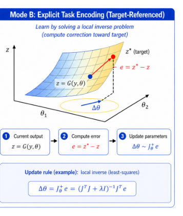
<figcaption class="paper-figure-caption"><b>Fig 1.</b> FIG. 1. Schematic for PCPL with Mode A (implicit target) and Mode B (explicit target).</figcaption>
</figure>
<figure class="paper-figure-card">
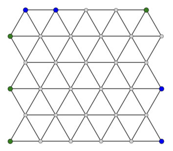
<figcaption class="paper-figure-caption"><b>Fig 2.</b> FIG. 2. Spring Network Schematic. The green nodes are fixed and the 4 blue nodes denote where the input forces containing the Iris dataset information are applied.</figcaption>
</figure>
<figure class="paper-figure-card">
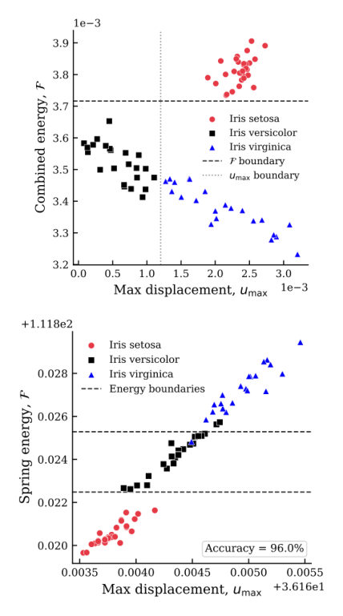
<figcaption class="paper-figure-caption"><b>Fig 3.</b> FIG. 3. Decision boundaries of case 2 and case 3 for a classical spring network in a gravitational field: Left - Hybrid system classification using adaptive thresholds in Ftotal vs. displacement space achieves 100% test ac- curacy. Right - Pure mechanical system classification using Etotal (linear strain energy) with gap-based energy thresholds achieves 96% accuracy, where both stiffness matrix K and masses b are trained via Jacobian pseu- doinverse with parameter perturbation.</figcaption>
</figure>
<figure class="paper-figure-card">
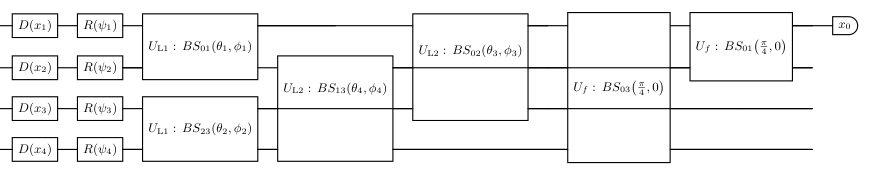
<figcaption class="paper-figure-caption"><b>Fig 4.</b> FIG. 4. Four-mode Gaussian photonic circuit for linear classification. Each mode is initialized in vacuum |0⟩, displaced by D(xi), and rotated by R(ϕi), giving UR = diag(eiϕ1, . . . , eiϕ4). This can be implemented by phase modulating lasers of tunable power. The first beam splitter layer UL1 = BS01(θ1, ϕ1) ⊕BS23(θ2, ϕ2) and second layer UL2 = BS02(θ3, ϕ3) ⊕BS13(θ4, ϕ4) mix the modes using 8 trainable parameters. The fixed concentration layer Uf = BS03(π/4, 0) · BS01(π/4, 0) concentrates information into mode 0. x-quadrature mean measurements yields ⟨ˆx0⟩= P</figcaption>
</figure>
<figure class="paper-figure-card">
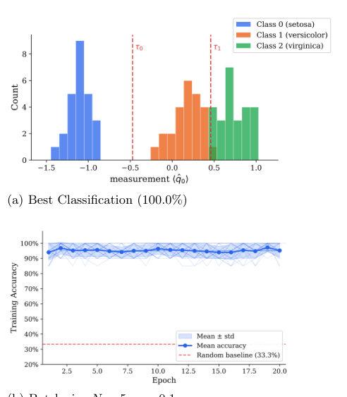
<figcaption class="paper-figure-caption"><b>Fig 5.</b> FIG. 5. Classification accuracy via mini-batch pseudoin- verse nudging. (a) distribution of photonic measure- ment outcomes by class showing clear separation be- tween Class 0 (blue, centered at -1), Class 1 (orange, centered at 0), and Class 2 (green), achieving 100.0% classification accuracy. (b) Training convergence using mini-batch pseudoinverse nudging with batch size N = 5 and learning rate η = 0.1, reaching nearly perfect accu- racy within 10 epochs.</figcaption>
</figure>
</div>

<p><strong>Summary.</strong> This paper introduces Perturbative Contrastive Physical Learning (PCPL), a general framework that enables machine learning by analyzing measurable contrasts in a physical system's response to small perturbations. It demonstrates this principle using both mechanical springs and continuous-variable photonic circuits, showing that complex tasks like classification and analog multiplication can be achieved without explicit backpropagation or centralized gradient computation.</p>
<p><strong>Why it may be interesting.</strong> The work provides a concrete physical realization of gradient descent principles using only measurable differences between states, which is highly relevant for designing autonomous quantum or optical computation systems where direct gradient calculation is intractable.</p>
<details>
<summary>Detailed structure</summary>
<p><strong>Main problem.</strong> To develop a general learning framework that derives parameter updates from measurable contrasts between physical states induced by controlled perturbations, bypassing the need for explicit centralized gradient computation.</p>
<p><strong>Main result.</strong> The proposed Perturbative Contrastive Physical Learning (PCPL) framework successfully applies to both mechanical spring networks and continuous-variable photonic circuits, demonstrating autonomous learning capabilities.</p>
<p><strong>Method.</strong> Learning is achieved by measuring the difference (contrast) between a system's response under perturbed conditions ($z_n$) versus its free response ($z_f$), allowing for updates analogous to gradient descent without explicit backpropagation.</p>
<p><strong>Model / system.</strong> The framework is demonstrated on two platforms: (i) mechanical spring networks whose stiffness parameters are learned from measured displacements/forces, and (ii) continuous-variable photonic circuits using Gaussian operations and quadrature measurements.</p>
<p><strong>Key observables.</strong> Measurable contrasts ($\Delta z = z_n - z_f$), classification accuracy (e.g., 97.7% for CV circuits), and the effective weight vector $W$ in the linear readout approximation.</p>
<p><strong>Important parameters / regimes.</strong> Perturbation magnitude ($\epsilon$), learning rate ($\eta$), and circuit parameters like beam splitter angles ($  heta$) and squeezing levels ($s$).</p>
<p><strong>Assumptions / limitations.</strong> The core assumption is that measurable contrasts are sufficient to approximate necessary gradient information, relying on linear response theory approximations (Jacobian linearization) for the updates.</p>
<p><strong>Figures summary.</strong> Figures illustrate schematic comparisons of PCPL modes (A vs. B), decision boundaries in feature spaces using spring networks, and circuit diagrams showing the implementation of multipliers and parameter updates in photonic circuits.</p>
<p><strong>Paper structure.</strong> The paper introduces PCPL by unifying prior contrast-based methods (EP, Frequency Propagation). It details two operational modes (Mode A: self-referenced contrast; Mode B: target-referenced contrast), applies this to a mechanical spring network for classification, and extends the methodology to continuous-variable photonic circuits, culminating in implementing an analog multiplier.</p>
</details>
<details>
<summary>Abstract</summary>
<p>Responses to perturbations are key to understanding physical systems. The ability to contrast such responses by comparing how a system reacts under slightly different conditions provides a mechanism for learning. Here, we introduce Perturbative Contrastive Physical Learning (PCPL), a general framework in which learning emerges from measurable contrasts between physical states produced by controlled changes to inputs, boundary conditions, parameters, or interpreter functions. PCPL unifies and extends prior approaches: Equilibrium Propagation is rooted in contrasts between free and nudged equilibria in energy-based systems, while Frequency Propagation corresponds to contrasts extracted from sinusoidally driven, frequency-demodulated responses. We show that contrast-driven updates can reflect either local sensitivities or global inverse-problem structure, yet do not require centralized gradient computation. Instead, effective learning geometry emerges implicitly from the system's own physical response, allowing learning behavior to arise without an external processor or explicit backpropagation. We demonstrate PCPL in two platforms: (i) spring networks that update bond stiffness using measured displacements and forces, and (ii) continuous-variable photonic circuits trained via x quadrature measurements and finite-difference estimates of the Jacobian. Both platforms successfully learn classification tasks. We further show that a continuous-variable photonic circuit can be trained to implement analog multiplication, illustrating a step toward more autonomous physical learning systems.</p>
</details>
<p><sub><a href="#top">↑ back to top</a></sub></p>

<p><a id="paper-2606.08949"></a></p>
<h3 id="controlling-multiparameter-quantum-estimation-in-exciton-optomechanics-system"><a href="http://arxiv.org/abs/2606.08949v1">Controlling multiparameter quantum estimation in exciton-optomechanics system</a></h3>
<p><strong>Authors:</strong> Hamza Harraf, Mohamed Amazioug, Rachid Ahl Laamara<br>
<strong>Type:</strong> theory · <strong>Category:</strong> other · <strong>PDF:</strong> <a href="https://arxiv.org/pdf/2606.08949v1">https://arxiv.org/pdf/2606.08949v1</a><br>
<strong>Analysis basis:</strong> full PDF text, analyzed in chunks
<strong>Topic relevance:</strong> <code>Tavis-Cummings &amp; cavity-many-emitter</code> <strong>3/5</strong> · <code>analog quantum simulation</code> <strong>3/5</strong> · <code>correlated cavity matter</code> <strong>3/5</strong> · <code>quantum measurements</code> <strong>3/5</strong> · <code>measurement-induced transitions</code> <strong>2/5</strong> · <code>quantum optics experiment</code> <strong>2/5</strong> · <code>Keldysh / 2PI / non-Gaussian methods</code> <strong>1/5</strong> · <code>correlated / nonlocal dissipation</code> <strong>1/5</strong> · <code>driven-dissipative phase transition</code> <strong>1/5</strong> · <code>entanglement &amp; information structure</code> <strong>1/5</strong> · <code>methods for driven-dissipative</code> <strong>1/5</strong></p>
<div class="figure-strip-hint">↔ Scroll figures horizontally</div>
<div class="paper-figures-scroll">
<figure class="paper-figure-card">
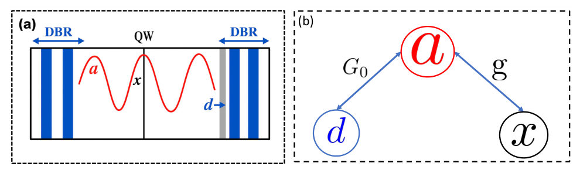
<figcaption class="paper-figure-caption"><b>Fig 1.</b> FIG. 1. (a) Sketch of exciton–optomechanical (EOM). A quantum well (QW) is embedded in a semiconductor microcavity formed by two distributed Bragg reflectors (DBRs), enabling interaction between the exciton mode (x) and the optical cavity mode (a). The DBRs are movable, and their mechanical motion (d) couples to the cavity photons through a dispersive interaction. The shaded grey region illustrates the mechanical degree of freedom and is not intended to represent the actual physical motion. (b) The cavity mode (a) couples to the exciton mode (x) and via a linear beam-splitter interaction (g). In addition, the cavity mode interact with the mechanical mode (d) through a dispersive...</figcaption>
</figure>
<figure class="paper-figure-card">
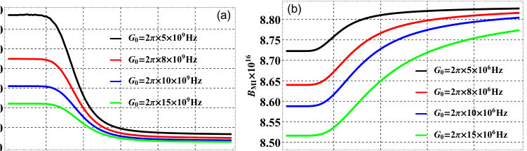
<figcaption class="paper-figure-caption"><b>Fig 2.</b> FIG. 2. (a) Plot of the BS /BR as function of the temperature T for different values of the coupling G0. (b) Plot of the BMI as function of the temperature T for different values of the coupling G0. The other parameters are provided in the table I.</figcaption>
</figure>
<figure class="paper-figure-card">

<figcaption class="paper-figure-caption"><b>Fig 3.</b> FIG. 3. Plot of the most informative bound (BMI) as function of the driving amplitude ε for different values of the coupling g. The other parameters are provided in the table I.</figcaption>
</figure>
<figure class="paper-figure-card">
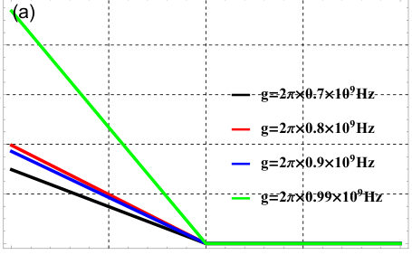
<figcaption class="paper-figure-caption"><b>Fig 4.</b> Figure 3 shows the dependence of the BMI on the driving amplitude ε for different values of the exciton-photon coupling strength g. One clearly observes that the BMI rapidly decreases as the driving amplitude increases and eventually approaches a nearly vanishing value. Physically, increasing the driving strength enhances the intracavity photon population, which effectively amplifies the hybrid interactions within the system. As a result, the encoded information associated with the estimated parameters becomes more efficiently transferred into the quantum fluctuations of the output state. Consequently, the distinguishability between neighboring quantum states is significantly enhanced,...</figcaption>
</figure>
<figure class="paper-figure-card">
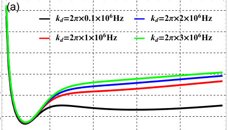
<figcaption class="paper-figure-caption"><b>Fig 5.</b> FIG. 4. Plot of the most informative bound (BMI) as function of the exciton decay rate kx for different values of the mechanical damping rate kd. The other parameters are provided in the table I.</figcaption>
</figure>
</div>

<p><strong>Summary.</strong> The paper analyzes multiparameter quantum estimation in an exciton-optomechanical system to determine the ultimate limits on parameter sensing accuracy. Using advanced quantum information techniques, it shows that low temperatures and strong coupling enhance precision, while heterodyne detection offers the best practical measurement strategy compared to homodyne methods.</p>
<p><strong>Why it may be interesting.</strong> This work is highly relevant as it combines cavity QED concepts (exciton-photon coupling) with mechanical oscillators in a quantum metrology context. The detailed comparison of estimation bounds and measurement schemes provides concrete guidelines for experimental realization in open quantum systems.</p>
<details>
<summary>Detailed structure</summary>
<p><strong>Main problem.</strong> The study investigates how to achieve optimal precision when simultaneously estimating multiple parameters (like coupling strength and decay rate) in a complex quantum system.</p>
<p><strong>Main result.</strong> Strong hybrid interactions and low temperatures significantly boost estimation accuracy, while thermal noise degrades performance; heterodyne detection proves superior to homodyne measurement techniques.</p>
<p><strong>Method.</strong> The analysis employs the Gaussian-state formalism, deriving covariance matrices and utilizing both Symmetric Logarithmic Derivative (SLD) and Right Logarithmic Derivative (RLD) approaches to calculate Quantum Fisher Information Matrices.</p>
<p><strong>Model / system.</strong> The physical platform is a hybrid exciton–optomechanical (EOM) system involving semiconductor quantum wells coupled to an optical microcavity and mechanical resonator. The dynamics are modeled using bosonic operators interacting via coupling terms ($g$ and $G_0$).</p>
<p><strong>Key observables.</strong> Quantum Fisher Information Matrix (QFIM), Quantum Cramér–Rao Bounds (QCRB), covariance matrix of quantum fluctuations, and the ratio between SLD and RLD bounds.</p>
<p><strong>Important parameters / regimes.</strong> Exciton-photon coupling strength ($g$), excitonic decay rate ($\kappa_x$), temperature ($T$), driving power ($\epsilon$), and optomechanical coupling strength ($G_0$).</p>
<p><strong>Assumptions / limitations.</strong> The analysis is restricted to Gaussian quantum fluctuations, and the comparison between measurement protocols assumes ideal detection efficiency.</p>
<p><strong>Figures summary.</strong> Figures illustrate the dependence of the estimation precision (BMI) on temperature, driving amplitude, and decay rates; they also compare the time evolution of QFI derived from SLD vs. Homodyne/Heterodyne measurements.</p>
<p><strong>Paper structure.</strong> The paper progresses by setting up the EOM Hamiltonian, linearizing the quantum Langevin equations for fluctuations to find the covariance matrix, applying advanced estimation theory (SLD/RLD) to derive bounds, and finally analyzing how environmental parameters ($T$, $\epsilon$, $k_x$) affect these ultimate precision limits.</p>
</details>
<details>
<summary>Abstract</summary>
<p>Multiparameter quantum estimation has emerged as a central task in quantum metrology. In this work, we investigate multiparameter quantum estimation in a hybrid exciton--optomechanical (EOM) system. The system consists of a semiconductor quantum well embedded inside a driven optomechanical microcavity, where the excitonic, optical, and mechanical modes interact coherently through exciton--photon and radiation-pressure couplings. Using the Gaussian-state formalism, we derive the covariance matrix of the steady-state quantum fluctuations and employ both the symmetric logarithmic derivative (SLD) and right logarithmic derivative (RLD) approaches to evaluate the quantum Fisher information matrix associated with the simultaneous estimation of the exciton--photon coupling strength $g$ and the excitonic decay rate $k_x$. We analyze the corresponding quantum Cramér--Rao bounds and determine the most informative precision limit governing the attainable estimation accuracy. The influence of several experimentally relevant parameters, including temperature, driving power, optomechanical coupling strength, and dissipation rates, is investigated in detail. Our results show that strong hybrid interactions and low-temperature regimes significantly enhance the estimation precision, whereas thermal fluctuations and dissipation processes deteriorate the metrological performance. Furthermore, we compare the ultimate quantum limits with experimentally feasible Gaussian measurement strategies based on homodyne and heterodyne detection. We show that heterodyne detection provides better estimation performance than homodyne schemes and can approach the optimal quantum precision limit in suitable parameter regimes.</p>
</details>
<p><sub><a href="#top">↑ back to top</a></sub></p>

<p><a id="paper-2606.08342"></a></p>
<h3 id="a-spectral-model-of-power-law-decay-in-natural-and-engineered-systems"><a href="http://arxiv.org/abs/2606.08342v1">A spectral model of power-law decay in natural and engineered systems</a></h3>
<p><strong>Authors:</strong> Balázs Sándor, Márk Honti, Henrique Santos Lima<br>
<strong>Type:</strong> theory · <strong>Category:</strong> statistical mechanics · <strong>PDF:</strong> <a href="https://arxiv.org/pdf/2606.08342v1">https://arxiv.org/pdf/2606.08342v1</a><br>
<strong>Analysis basis:</strong> full PDF text, analyzed in chunks
<strong>Topic relevance:</strong> <code>correlated / nonlocal dissipation</code> <strong>3/5</strong> · <code>methods for driven-dissipative</code> <strong>3/5</strong> · <code>non-equilibrium dynamics</code> <strong>3/5</strong> · <code>non-equilibrium universality</code> <strong>3/5</strong> · <code>Keldysh / 2PI / non-Gaussian methods</code> <strong>2/5</strong> · <code>driven-dissipative phase transition</code> <strong>2/5</strong> · <code>Kondo &amp; dissipative impurity</code> <strong>1/5</strong> · <code>analog quantum simulation</code> <strong>1/5</strong> · <code>scars &amp; prethermalization</code> <strong>1/5</strong></p>
<div class="figure-strip-hint">↔ Scroll figures horizontally</div>
<div class="paper-figures-scroll">
<figure class="paper-figure-card">
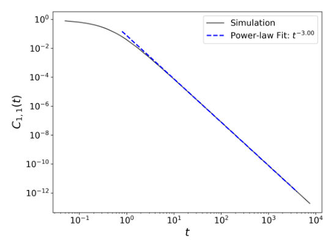
<figcaption class="paper-figure-caption"><b>Fig 1.</b> FIG. 1: Boundary concentration C1,1(t) as a function of time t for the two-dimensional transport model (Eq. (14) for d = 2). The numerical simulation of the discrete layered diffusion matrix under absorbing Dirichlet boundary conditions on a 512 × 512 grid (solid black line) is consistent with the analytical asymptotic scaling law t−3</figcaption>
</figure>
<figure class="paper-figure-card">
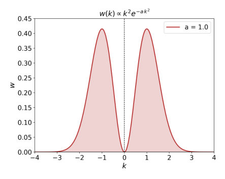
<figcaption class="paper-figure-caption"><b>Fig 2.</b> FIG. 2: Modal weight distribution w(k) derived from the emergent Gamma rate spectrum in Eq. (32).</figcaption>
</figure>
<figure class="paper-figure-card">
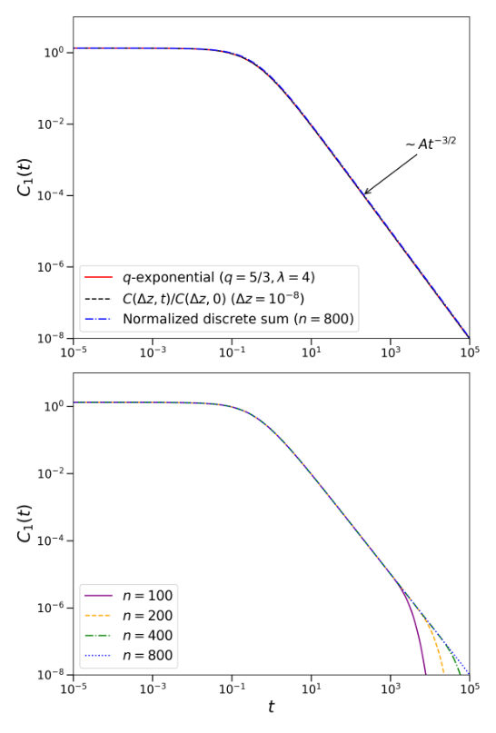
<figcaption class="paper-figure-caption"><b>Fig 3.</b> FIG. 3: (Top) Boundary concentration C1(t) as a function of time t for the normalized q-exponential function (red solid curve), the continuous analytical solution in Eq. (42) (black dashed curve), and the discrete spectral sum computed for n = 800 layers via Eq. (9) and Eq. (40) (blue dash-dotted curve). (Bottom) Discrete spectral sum for n = 100 (purple), n = 200 (orange), n = 400 (green), and n = 800 (blue).</figcaption>
</figure>
</div>

<p><strong>Summary.</strong> This work develops a theoretical framework showing that power-law decay in complex transport processes can be derived from fundamental principles of linear diffusion and spectral analysis. By analyzing the low-wavenumber behavior of the system's eigenmodes, the authors connect classical diffusion directly to nonextensive statistical mechanics, yielding a universal entropic index $q=5/3$ in one dimension.</p>
<p><strong>Why it may be interesting.</strong> While focused on classical diffusion, the rigorous connection between linear spectral theory (eigenmodes) and nonextensive statistical mechanics provides a powerful mathematical framework applicable to open quantum systems where dissipation or boundary effects are crucial.</p>
<details>
<summary>Detailed structure</summary>
<p><strong>Main problem.</strong> To derive a first-principles spectral mechanism explaining how nonextensive q-exponential dilution and power-law relaxation emerge in linear, non-ideal transport systems.</p>
<p><strong>Main result.</strong> The analysis establishes that the asymptotic decay rate is governed by the system's boundary geometry and spectral dimensionality, leading to an emergent entropic index $q=5/3$ in the 1D limit.</p>
<p><strong>Method.</strong> Spectral analysis of a layered diffusion matrix, involving taking the continuum limit (sum $    o$ integral) over low-wavenumber eigenmodes.</p>
<p><strong>Model / system.</strong> The model uses a layered diffusion system with an absorbing boundary, mathematically analogous to an incompletely mixed reactor or transport process on a semi-infinite domain. The dynamics are governed by a linear master equation ($rac{dC}{dt} = AC$).</p>
<p><strong>Key observables.</strong> Macroscopic relaxation decay $C(t) \propto t^{-eta}$ and the generalized q-exponential function; boundary flux/concentration $C_1(t)$.</p>
<p><strong>Important parameters / regimes.</strong> The entropic index $q$, spatial dimension $d$, and the low-wavenumber scaling of modal weights ($w(k) \propto k^2$).</p>
<p><strong>Assumptions / limitations.</strong> The system is modeled by a linear transport operator, and the analysis relies on taking the continuum limit ($n 	o \infty$) in the spectral decomposition.</p>
<p><strong>Figures summary.</strong> Figures compare numerical simulations of boundary concentration decay $C_1(t)$ using three methods (q-exponential fit, continuous analytical solution, discrete sum), showing convergence to the predicted power-law scaling.</p>
<p><strong>Paper structure.</strong> The paper develops from defining the spectral mechanism for relaxation in layered systems, deriving asymptotic laws based on dimensional analysis ($d$), and finally demonstrating the invariance of the key exponent ($q=5/3$) in the 1D limit across different initial conditions.</p>
</details>
<details>
<summary>Abstract</summary>
<p>We present a first-principles spectral mechanism for the emergence of nonextensive $q$-exponential dilution and power-law relaxation in non-ideal transport systems. By modeling an incompletely mixed reactor as a layered diffusion matrix with an absorbing boundary, we demonstrate that macroscopic power-law tails depend on the geometric interaction between the initial tracer placement and the domain's boundary configuration. For a one-dimensional system, an asymmetric, volumetrically distributed initial concentration profile projects onto the low-wavenumber eigenmodes, generating an emergent Gamma distribution of relaxation rates; at an infinitesimal boundary layer thickness ($Δz \to 0$), this profile yields the nonextensive $q$-exponential decay function exactly across the entire temporal domain with $q = 5/3$. Extended to $d$ dimensions under a highly localized, boundary-adjacent singular initial condition, the resulting scaling exponents and corresponding $q$ values depend explicitly on the spatial configuration of the absorbing boundaries. However, in the one-dimensional limit ($d=1$), these distinct initial states and boundary formulations intersect, rendering the $q=5/3$ exponent geometrically invariant. Our approach establishes a clear connection between linear diffusion transport and nonextensive statistical mechanics, showing how heavy-tailed transport can be derived from boundary geometry and spectral dimensionality.</p>
</details>
<p><sub><a href="#top">↑ back to top</a></sub></p>

<p><a id="paper-2606.09684"></a></p>
<h3 id="geometric-dissipation-constraints-in-stochastic-reaction-dynamics-a-variational-observable-for-hidden-kinetic-structure-in-energy-landscapes"><a href="http://arxiv.org/abs/2606.09684v1">Geometric Dissipation Constraints in Stochastic Reaction Dynamics: A Variational Observable for Hidden Kinetic Structure in Energy Landscapes</a></h3>
<p><strong>Authors:</strong> Shlomo Segal<br>
<strong>Type:</strong> theory · <strong>Category:</strong> statistical mechanics · <strong>PDF:</strong> <a href="https://arxiv.org/pdf/2606.09684v1">https://arxiv.org/pdf/2606.09684v1</a><br>
<strong>Analysis basis:</strong> full PDF text, analyzed in chunks
<strong>Topic relevance:</strong> <code>methods for driven-dissipative</code> <strong>3/5</strong> · <code>non-equilibrium dynamics</code> <strong>3/5</strong> · <code>non-equilibrium universality</code> <strong>3/5</strong> · <code>Keldysh / 2PI / non-Gaussian methods</code> <strong>2/5</strong> · <code>correlated / nonlocal dissipation</code> <strong>2/5</strong> · <code>driven-dissipative phase transition</code> <strong>2/5</strong> · <code>Kondo &amp; dissipative impurity</code> <strong>1/5</strong> · <code>analog quantum simulation</code> <strong>1/5</strong> · <code>entanglement &amp; information structure</code> <strong>1/5</strong> · <code>scars &amp; prethermalization</code> <strong>1/5</strong></p>
<div class="figure-strip-hint">↔ Scroll figures horizontally</div>
<div class="paper-figures-scroll">
<figure class="paper-figure-card">
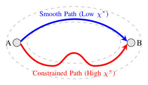
<figcaption class="paper-figure-caption"><b>Fig 1.</b> Fig. 1: Vectorial TikZ illustration of two pathways across an identical energy landscape. While both pathways connect states A and B over comparable energetic barriers, the red pathway encounters high geometric contractive stiffness (funneling turns), yielding a pronounced local geometric dissipation penalty.</figcaption>
</figure>
<figure class="paper-figure-card">
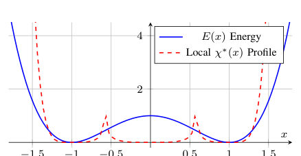
<figcaption class="paper-figure-caption"><b>Fig 2.</b> Fig. 2: Exact numerical resolution of the local geometric dissipation integrand, χ∗(x), plotted alongside the potential E(x) = (x2 −1)2. Symmetrical peaks emerge at inflection points where geometric constraints effectively increase local dissipation during transit.</figcaption>
</figure>
<figure class="paper-figure-card">
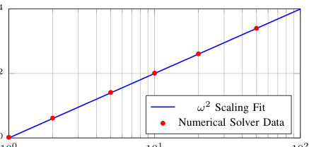
<figcaption class="paper-figure-caption"><b>Fig 3.</b> Fig. 3: Log-log plot confirming the microstructural scaling law for a corrugated periodic potential E(x) = sin(ωx). Discrete markers indicate actual values extracted from the numerical solver, demonstrating strict adherence to the analytical ω2 law.</figcaption>
</figure>
</div>

<p><strong>Summary.</strong> This work introduces a geometric dissipation observable ($\chi^*$) to quantify hidden kinetic constraints within stochastic reaction dynamics. By analyzing the local geometry of the configuration space flow, $\chi^*$ provides a diagnostic tool that can differentiate between competing reaction pathways that are otherwise indistinguishable using only standard free-energy calculations. This suggests an additional layer of geometric control governing molecular motion.</p>
<p><strong>Why it may be interesting.</strong> While focused on classical stochastic dynamics, the concept of deriving a geometric constraint observable that goes beyond simple potential energy surfaces is highly relevant to understanding non-equilibrium quantum processes where path dependence (e.g., in quantum tunneling or decoherence) is critical.</p>
<details>
<summary>Detailed structure</summary>
<p><strong>Main problem.</strong> The paper addresses characterizing hidden kinetic constraints in stochastic reaction dynamics that are invisible to standard global thermodynamic descriptors like free energy barriers.</p>
<p><strong>Main result.</strong> A novel geometric dissipation observable, $\chi^*$, was derived which successfully distinguishes between kinetically distinct reaction pathways even when they share the same overall free-energy profile.</p>
<p><strong>Method.</strong> The authors employ a variational functional approach applied to overdamped Langevin dynamics formulated in Wasserstein space to derive this diagnostic quantity.</p>
<p><strong>Model / system.</strong> The model is an overdamped Langevin system governed by $\mathrm{d}x(t) = A(x)\mathrm{d}t + \sqrt{2D}\mathrm{d}W(t)$, applied to various potentials including the Müller-Brown potential and corrugated landscapes.</p>
<p><strong>Key observables.</strong> Geometric Dissipation Observable ($\chi^*$), Phase-Space Contraction Rate ($\kappa(x)$), Local Force-Drift Alignment $\phi(x)$.</p>
<p><strong>Important parameters / regimes.</strong> The asymptotic limit $\lambda 	o 0^+$ is crucial for deriving the final observable; quadratic scaling behavior ($\omega^2$) in corrugated potentials is a key prediction.</p>
<p><strong>Assumptions / limitations.</strong> Assumes standard regularity and ergodicity of the underlying stochastic process.</p>
<p><strong>Figures summary.</strong> Figure 1 illustrates how $\chi^*$ penalizes constrained pathways compared to unconstrained ones on an identical energy landscape. Figure 2 shows $\chi^*(x)$ peaking at inflection points, and Figure 3 confirms a theoretical quadratic scaling law for corrugated potentials.</p>
<p><strong>Paper structure.</strong> The paper establishes the limitations of global descriptors, derives the variational functional $I_\lambda[\psi]$ based on Orlicz-Sobolev spaces, calculates the leading-order asymptotic observable $\chi^*$, proves its physical significance by distinguishing pathways, and validates it using numerical simulations across various benchmark systems.</p>
</details>
<details>
<summary>Abstract</summary>
<p>We propose a geometric framework for characterizing hidden kinetic constraints in stochastic reaction dynamics. While free-energy barriers and entropy production provide global descriptors of thermodynamic behavior, they are largely insensitive to local geometric structure in configuration space that governs pathway selection. Starting from overdamped Langevin dynamics formulated as a gradient flow in Wasserstein space, we derive a variational functional whose leading-order asymptotic structure defines a local dissipation-geometry coupling observable. This quantity combines force-drift alignment with phase-space contraction induced by the divergence of the drift field, yielding a scalar field that reflects second-order geometric features of the underlying energy landscape. We demonstrate that this observable distinguishes kinetically distinct reaction channels that are degenerate under conventional free-energy analysis, as shown through numerical experiments on benchmark systems including the Muller-Brown potential, corrugated periodic landscapes, and the conformational transitions of Alanine Dipeptide. These experiments demonstrate robust separation of pathways and are consistent with a quadratic scaling behavior in the high-frequency homogenization regime. Our results suggest that stochastic reaction dynamics contain an additional geometric layer of kinetic control in molecular motion not captured by standard thermodynamic or reaction-coordinate descriptions.</p>
</details>
<p><sub><a href="#top">↑ back to top</a></sub></p>

<p><a id="paper-2606.09716"></a></p>
<h3 id="optomechanically-controlled-response-amplification-for-enhanced-quantum-sensing"><a href="http://arxiv.org/abs/2606.09716v1">Optomechanically controlled response amplification for enhanced quantum sensing</a></h3>
<p><strong>Authors:</strong> Javid Naikoo<br>
<strong>Type:</strong> theory · <strong>Category:</strong> other · <strong>PDF:</strong> <a href="https://arxiv.org/pdf/2606.09716v1">https://arxiv.org/pdf/2606.09716v1</a><br>
<strong>Analysis basis:</strong> full PDF text, analyzed in chunks
<strong>Topic relevance:</strong> <code>correlated cavity matter</code> <strong>3/5</strong> · <code>Keldysh / 2PI / non-Gaussian methods</code> <strong>2/5</strong> · <code>correlated / nonlocal dissipation</code> <strong>2/5</strong> · <code>driven-dissipative phase transition</code> <strong>2/5</strong> · <code>entanglement &amp; information structure</code> <strong>2/5</strong> · <code>methods for driven-dissipative</code> <strong>2/5</strong> · <code>Tavis-Cummings &amp; cavity-many-emitter</code> <strong>1/5</strong> · <code>analog quantum simulation</code> <strong>1/5</strong> · <code>interference shaping light</code> <strong>1/5</strong> · <code>non-equilibrium dynamics</code> <strong>1/5</strong> · <code>non-equilibrium universality</code> <strong>1/5</strong> · <code>quantum measurements</code> <strong>1/5</strong></p>
<div class="figure-strip-hint">↔ Scroll figures horizontally</div>
<div class="paper-figures-scroll">
<figure class="paper-figure-card">
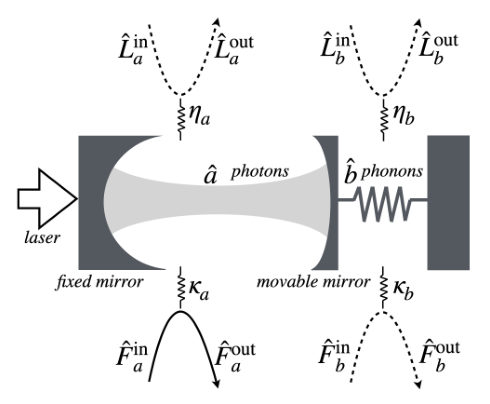
<figcaption class="paper-figure-caption"><b>Fig 1.</b> FIG. 1. Schematic of the cavity optomechanical system. The setup consists of an optical cavity mode ˆa coupled via radiation pressure to a mechanical (phonon) mode ˆb associated with the movable cavity element. The optical probe channel ˆF in(out) a , coupled with strength κa, represents the experimentally accessible input (output) field used for parameter estimation. The remaining channels, namely ˆF in(out) b and the bath fields ˆLin(out) a,b , with coupling rates κb and ηa,b, are ficti- tious/uncontrollable inaccessible channels introduced within the ef- fective input–output description of the system.</figcaption>
</figure>
<figure class="paper-figure-card">
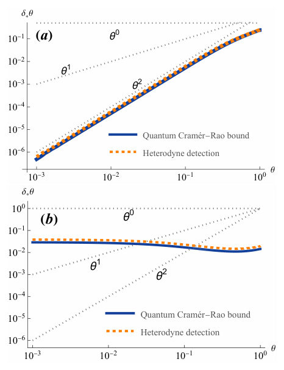
<figcaption class="paper-figure-caption"><b>Fig 2.</b> FIG. 2. Root-mean-square estimation error δ∗θ as a function of the perturbation strength θ, perturbing the detuning and mechanical frequency according to Eq. (58). The solid blue and dashed orange curves denote the quantum and classical bounds, δQθ and δCθ, ob- tained from Eqs. (42) and (46), respectively. (a) Heff in Eq. (56) is tuned to a singular configuration using system parameter given in Eq. (63) along with the control variable α, β and probe frequency ω. Both the quantum and classical bounds exhibit the quadratic scaling δ∗θ ∝θ2, in agreement with the analytical predictions of Eqs. (68) and (69), thereby demonstrating consistent scaling behavior for both the quantum-limited and...</figcaption>
</figure>
<figure class="paper-figure-card">
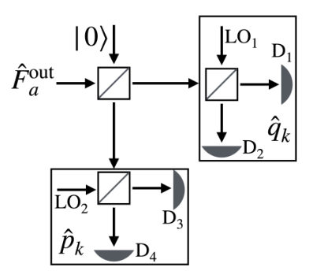
<figcaption class="paper-figure-caption"><b>Fig 3.</b> FIG. 3. Schematic of heterodyne detection via dual balanced ho- modyne measurements. The probe output mode is first combined with vacuum at a beam splitter, generating two output ports. Each port is subsequently measured independently using balanced homo- dyne detection. The first output is combined with a local oscillator LO1 on a second beam splitter, and the resulting outputs are mea- sured by detectors D1 and D2, which access the quadrature qk. The second output is combined with a local oscillator LO2 on another beam splitter, with detection performed by D3 and D4, which mea- sure the quadrature pk. Together, these two homodyne measurements realize a heterodyne detection scheme that...</figcaption>
</figure>
</div>

<p><strong>Summary.</strong> The paper develops a theoretical analysis showing that cavity optomechanical systems can act as highly sensitive quantum sensors. By tuning the system parameters to induce an effective dynamical singularity, the estimation precision (quantified by QFI) diverges as the perturbation strength decreases. This demonstrates a controllable mechanism for achieving enhanced metrology using standard measurement techniques.</p>
<p><strong>Why it may be interesting.</strong> This work provides a concrete theoretical framework demonstrating how engineered nonlinear coupling (optomechanics) can be used to actively control system dynamics toward singular points that enhance fundamental measurement limits beyond standard scaling laws.</p>
<details>
<summary>Detailed structure</summary>
<p><strong>Main problem.</strong> The research aims to harness strongly amplified dynamical responses in cavity optomechanical systems for achieving enhanced quantum sensing and metrology.</p>
<p><strong>Main result.</strong> By tuning the system near a dynamically induced singularity, the Quantum Fisher Information (QFI) exhibits divergent scaling with decreasing perturbation strength, leading to significantly suppressed estimation error.</p>
<p><strong>Method.</strong> The analysis employs Gaussian estimation theory, utilizing input-output formalism in the frequency domain and solving for Green's functions to quantify the sensitivity via QFI and CFI.</p>
<p><strong>Model / system.</strong> The system is a cavity optomechanical setup where an optical mode couples to a mechanical oscillator via radiation pressure. The dynamics are modeled using linearized quantum Langevin equations derived from the full Hamiltonian in the rotating frame.</p>
<p><strong>Key observables.</strong> Quantum Fisher Information (QFI), Classical Fisher Information (CFI), and the output field covariance matrix ($\mathbf{V}_{	ext{out}}^F[\omega]$).</p>
<p><strong>Important parameters / regimes.</strong> The system is analyzed by tuning parameters to achieve a singular regime where $\det \mathcal{H}_{	ext{eff}} = 0$, which maximizes sensitivity.</p>
<p><strong>Assumptions / limitations.</strong> Linearization of dynamics around mean fields, use of Gaussian estimation theory, and assuming the probe field noise can be treated via input-output formalism.</p>
<p><strong>Figures summary.</strong> Figures schematically illustrate the setup (optics coupled to mechanics) and show comparisons between scaling behaviors ($\delta^*	heta$ vs. $ heta$) in both singular (enhanced sensitivity) and non-singular regimes (saturation).</p>
<p><strong>Paper structure.</strong> The paper progresses from defining the physical system and deriving linearized equations of motion, moving into the frequency domain analysis using scattering matrices to determine output field statistics, culminating in the application of quantum estimation theory to identify optimal sensing regimes.</p>
</details>
<details>
<summary>Abstract</summary>
<p>We show that strongly amplified dynamical responses in cavity optomechanical systems can be harnessed for enhanced quantum sensing. By tuning the optomechanical interaction to a regime of enhanced susceptibility, weak perturbations produce disproportionately large changes in the system response, leading to substantially improved estimation precision. Using Gaussian estimation theory, we demonstrate that the quantum Fisher information exhibits a divergent scaling as the perturbation strength decreases, implying a corresponding suppression of the estimation error. We further show that heterodyne detection of the output cavity field yields the classical Fisher information with the same asymptotic scaling as the quantum Fisher information, demonstrating that the enhanced sensitivity is accessible with a standard measurement protocol. These results identify amplified optomechanical dynamics as a controllable resource for quantum enhanced sensing and metrology.</p>
</details>
<p><sub><a href="#top">↑ back to top</a></sub></p>

<p><a id="paper-2606.08149"></a></p>
<h3 id="collective-dynamics-in-a-one-dimensional-heisenberg-ferromagnetic-spin-chain"><a href="http://arxiv.org/abs/2606.08149v1">Collective dynamics in a one-dimensional Heisenberg ferromagnetic spin chain</a></h3>
<p><strong>Authors:</strong> R. Arun, M. Lakshmanan, Avadh Saxena<br>
<strong>Type:</strong> theory · <strong>Category:</strong> statistical mechanics · <strong>PDF:</strong> <a href="https://arxiv.org/pdf/2606.08149v1">https://arxiv.org/pdf/2606.08149v1</a><br>
<strong>Analysis basis:</strong> full PDF text, analyzed in chunks
<strong>Topic relevance:</strong> <code>driven-dissipative phase transition</code> <strong>3/5</strong> · <code>methods for driven-dissipative</code> <strong>3/5</strong> · <code>analog quantum simulation</code> <strong>2/5</strong> · <code>non-equilibrium dynamics</code> <strong>2/5</strong> · <code>non-equilibrium universality</code> <strong>2/5</strong> · <code>spintronics-quantum-optics interface</code> <strong>2/5</strong> · <code>Frenkel-Kontorova</code> <strong>1/5</strong> · <code>Keldysh / 2PI / non-Gaussian methods</code> <strong>1/5</strong> · <code>correlated / nonlocal dissipation</code> <strong>1/5</strong> · <code>exotic spin models in light-matter</code> <strong>1/5</strong></p>
<div class="figure-strip-hint">↔ Scroll figures horizontally</div>
<div class="paper-figures-scroll">
<figure class="paper-figure-card">
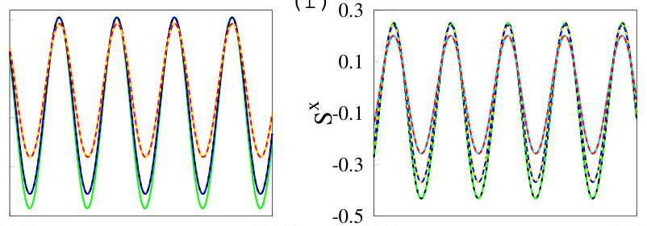
<figcaption class="paper-figure-caption"><b>Fig 1.</b> FIG. 1. Time evolution of Sx for the number of spins (a) 1, (b) 2, (c) 3, (d) 4, (e) 5, and (f) 6 for</figcaption>
</figure>
<figure class="paper-figure-card">
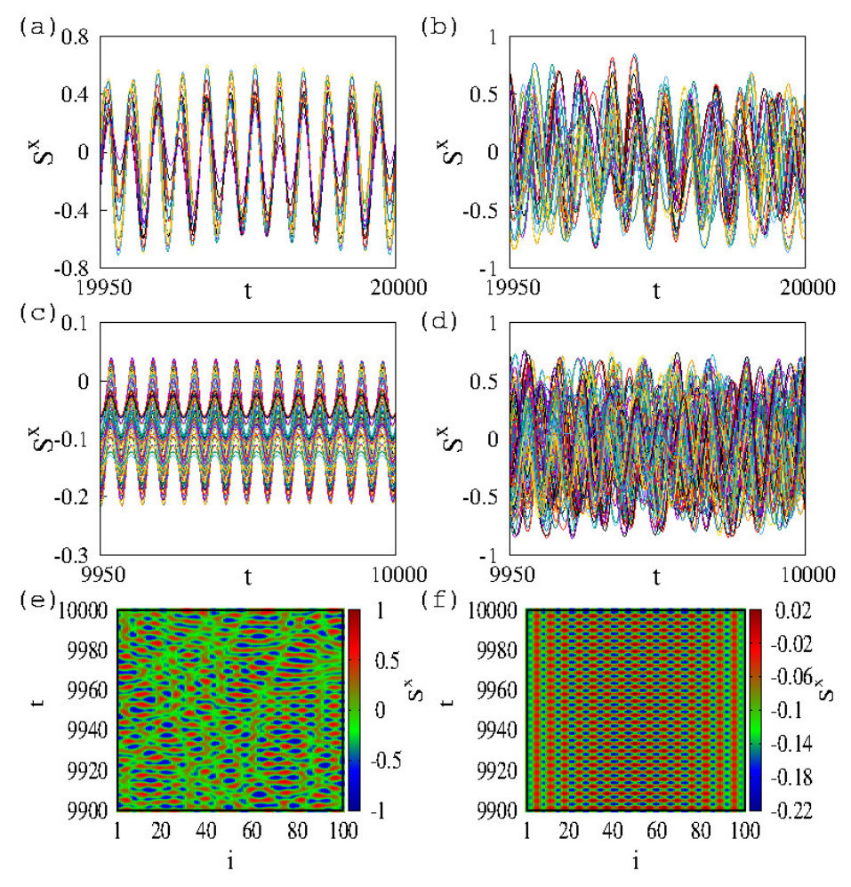
<figcaption class="paper-figure-caption"><b>Fig 2.</b> FIG. 2. Time evolution of Sx when β = 0 for the number of spins N (a) 25, (b) 30, (c) 100 and</figcaption>
</figure>
<figure class="paper-figure-card">

<figcaption class="paper-figure-caption"><b>Fig 3.</b> FIG. 3. Complete synchronization between the spins (10,91) and (25,76) in their time evolution of</figcaption>
</figure>
<figure class="paper-figure-card">

<figcaption class="paper-figure-caption"><b>Fig 4.</b> FIG. 4. The standard deviation estimated for Sx(t) between different pairs of spins ‘i’ and ‘N+1−i’</figcaption>
</figure>
<figure class="paper-figure-card">

<figcaption class="paper-figure-caption"><b>Fig 5.</b> FIG. 5. Time evolution of Sz of 100 number of spins for the parameters A = 2, B = 2, C = 1, Kz =</figcaption>
</figure>
</div>

<p><strong>Summary.</strong> This paper analyzes the complex collective dynamics, including various synchronization modes, within a 1D anisotropic Heisenberg ferromagnetic spin chain. By solving the LLGS equation, the authors demonstrate that while large chains tend toward desynchronization, applying a field-like torque can successfully restore coherent inphase or complete synchronization. The findings confirm the simultaneous existence of multiple oscillatory states depending on external driving fields.</p>
<p><strong>Why it may be interesting.</strong> This work explores collective dynamics and emergent order (synchronization) in a quantum spin chain using classical/semi-classical equations of motion. The restoration of coherence via specific field terms is relevant to understanding dissipation and long-range correlations in many-body systems.</p>
<details>
<summary>Detailed structure</summary>
<p><strong>Main problem.</strong> The study investigates different oscillatory modes, including synchronization states (complete, inphase, antiphase), within a one-dimensional anisotropic Heisenberg ferromagnetic spin chain.</p>
<p><strong>Main result.</strong> The field-like torque is shown to be capable of restoring synchronization that is otherwise lost as the number of spins increases. The system exhibits multiple coexisting dynamic modes depending on applied fields.</p>
<p><strong>Method.</strong> The dynamics are analyzed by solving the Landau-Lifshitz-Gilbert-Slonczewski equation numerically and comparing results with analytical derivations for oscillation frequencies.</p>
<p><strong>Model / system.</strong> The model is a one-dimensional anisotropic Heisenberg ferromagnetic spin chain, whose evolution is governed by the LLGS equation. The Hamiltonian includes terms related to nearest-neighbor interactions ($A, B, C$) and external fields.</p>
<p><strong>Key observables.</strong> Oscillatory modes (complete synchronization, inphase/antiphase synchronization, desynchronization), standard deviation ($\sigma$), and oscillation frequency ($f$).</p>
<p><strong>Important parameters / regimes.</strong> The system is studied by varying the number of spins ($N$) and applying specific field-like torques ($eta$, $H_x, H_y, H_z$).</p>
<p><strong>Assumptions / limitations.</strong> The analysis relies on solving the LLGS equation and making approximations to derive analytical expressions for synchronized oscillation frequencies.</p>
<p><strong>Figures summary.</strong> Figures illustrate time evolution of spin components ($S_x$), the loss/restoration of synchronization quantified by $\sigma$, and phase difference plots confirming various synchronization states (inphase, antiphase).</p>
<p><strong>Paper structure.</strong> The paper progresses from defining the physical model and governing equation to numerically demonstrating the existence and dependence of different oscillatory modes on system size and external torques, culminating in analytical validation.</p>
</details>
<details>
<summary>Abstract</summary>
<p>We investigate the different oscillatory modes, namely, complete synchronization, inphase synchronization, antiphase synchronization and desynchronization in a one-dimensional anisotropic Heisenberg ferromagnetic spin chain consisting of a large number of spins. By solving the associated Landau-Lifshitz-Gilbert-Slonczewski equation for the spins we show the simultaneous existence of the above mentioned oscillatory modes in the spins. We observe that when the number of the spins is large the synchronization is lost between the spins; however, we identify that the field-like torque is able to induce synchronous oscillations of the spins in the chain again. We also confirm the agreement of the numerically obtained values of the frequency of the inphase synchronized oscillations with the analytically obtained values.</p>
</details>
<p><sub><a href="#top">↑ back to top</a></sub></p>

<p><a id="paper-2606.09790"></a></p>
<h3 id="operation-mpemba-effect-breakdown-of-resource-markovianity-of-free-dynamics"><a href="http://arxiv.org/abs/2606.09790v1">Operation Mpemba effect: Breakdown of resource-Markovianity of free dynamics</a></h3>
<p><strong>Authors:</strong> Tian-Ren Jin, Yu-Ran Zhang, Heng Fan<br>
<strong>Type:</strong> theory · <strong>Category:</strong> statistical mechanics · <strong>PDF:</strong> <a href="https://arxiv.org/pdf/2606.09790v1">https://arxiv.org/pdf/2606.09790v1</a><br>
<strong>Analysis basis:</strong> full PDF text, analyzed in chunks
<strong>Topic relevance:</strong> <code>correlated / nonlocal dissipation</code> <strong>3/5</strong> · <code>driven-dissipative phase transition</code> <strong>3/5</strong> · <code>methods for driven-dissipative</code> <strong>3/5</strong> · <code>non-equilibrium dynamics</code> <strong>3/5</strong> · <code>non-equilibrium universality</code> <strong>2/5</strong> · <code>Keldysh / 2PI / non-Gaussian methods</code> <strong>1/5</strong> · <code>entanglement &amp; information structure</code> <strong>1/5</strong> · <code>scars &amp; prethermalization</code> <strong>1/5</strong></p>
<div class="figure-strip-hint">↔ Scroll figures horizontally</div>
<div class="paper-figures-scroll">
<figure class="paper-figure-card">

<figcaption class="paper-figure-caption"><b>Fig 1.</b> FIG. 1. Schematic comparison of the state-based, Pontus, and operation perspectives on resource Mpemba effect. The vertical axis denotes the resource measure M(ρ), red circles denote initial resourceful states, green arrows denote free relaxations, and blue circles denote the corresponding output states. (a) State-based Mpemba effect. Different initial states are compared under the same relaxation dynamics, and the more resourceful initial state ρ0 λ1 relaxes to a less resourceful state than the less resourceful initial states ρ0 λ2 and ρ0 λ3. (b) Pontus-Mpemba effect. A two-step protocol consisting of heating stage followed by relaxation is compared with direct relaxation from the same...</figcaption>
</figure>
<figure class="paper-figure-card">

<figcaption class="paper-figure-caption"><b>Fig 2.</b> FIG. 2. Mpemba effect for distinguishability. The state ρ1, ρ2 are represented by the Bloch vectors ⃗r(i) = (r(i) 1 , r(i) 2 , r(i) 3 )T with r(i) 3 = 0 for i = 1, 2. The trace distance is D(ρ1, ρ2) = 1</figcaption>
</figure>
<figure class="paper-figure-card">

<figcaption class="paper-figure-caption"><b>Fig 3.</b> FIG. 3. Thermomajorization Mpemba effect from the perspective of operation Mpemba effect. The states ⃗p(λ) are initialized from ⃗p = (1, 0, 0)T by initialization dynamics d⃗p/dλ = ˆA⃗p with the symmetric matrix ˆA = [anm] parametrized by (a01, a12, a02) ≈ (0.010, 0.086, 0.004), ann = P</figcaption>
</figure>
<figure class="paper-figure-card">

<figcaption class="paper-figure-caption"><b>Fig 4.</b> Figure 3 demonstrates the thermomajorization Mpemba ef- fect with the detector D(⃗p,⃗π) = maxn[pn/πn] of thermoma- jorization [7]. In Fig. 3(a), the detector Dλ,t = D( ˆRt ˆSλ⃗p,⃗π) exhibits the Mpemba effect between different initialization parameters λ, after t &gt; 17. In Fig. 3(b), the increase of L1(λ, t) = ∥ˆRt ˆSλ ˆR−1 t ∥1, which witnesses the athermality of the intermediate matrix, shows that the operation Mpemba effect occur at t ≈5, indicating that the operational signa- tures appear earlier than the state signatures. In Fig. 3(c), the nonzero total positive change Nt and normalized total positive change Nt/D0,t of the estimator Dλ,t witness the occurrence of the thermomajorization...</figcaption>
</figure>
</div>

<p><strong>Summary.</strong> This work generalizes the Mpemba effect concept by defining 'resource-Markovianity' for quantum resource theories. It shows that the operational detection of this effect occurs when a relaxation process breaks the expected monotonic decrease of a resource measure with time. This provides a unified, measure-independent diagnostic tool applicable to both quantum distinguishability and classical thermodynamic ordering.</p>
<p><strong>Why it may be interesting.</strong> It provides a powerful, general mathematical tool (resource-Markovianity) to detect anomalous relaxation phenomena (Mpemba effect) in open quantum systems, linking it directly to non-Markovian dynamics.</p>
<details>
<summary>Detailed structure</summary>
<p><strong>Main problem.</strong> To provide a measure-independent operational characterization of the resource Mpemba effect by linking it to the breakdown of 'resource-Markovianity' in free dynamics.</p>
<p><strong>Main result.</strong> The operational formulation, based on breaking resource-Markovianity, provides a general and measure-independent way to characterize the Mpemba effect across various quantum resource theories.</p>
<p><strong>Method.</strong> The authors introduce 'resource-Markovianity' as a concept and define the Mpemba effect operationally as the failure of this property during relaxation dynamics.</p>
<p><strong>Model / system.</strong> The framework is applied to general quantum resource theories, modeling dynamics using Lindblad equations for distinguishability (quantum case) and master equations for probability distributions (thermomajorization/classical case).</p>
<p><strong>Key observables.</strong> Resource measure $M(
ho)$, trace distance $D(
ho_1, 
ho_2)$, and the intermediate matrix norm $L_1(\lambda, t)$.</p>
<p><strong>Important parameters / regimes.</strong> Time ($t$), resource parameters ($\lambda$), and initial state differences.</p>
<p><strong>Assumptions / limitations.</strong> The analysis assumes the existence of inverses for both initialization dynamics ($E_\lambda$) and relaxation operations ($N_t$).</p>
<p><strong>Figures summary.</strong> Figures schematically compare three perspectives (state-based, Pontus-Mpemba, operation Mpemba) showing how resource measures change; specific figures show crossovers in trace distance or $L_1$ norms.</p>
<p><strong>Paper structure.</strong> The paper develops the concept of resource-Markovianity, establishes the operational definition of the Mpemba effect as its breakdown, and then applies this framework to concrete examples like quantum distinguishability and classical thermomajorization.</p>
</details>
<details>
<summary>Abstract</summary>
<p>The Mpemba effect refers to faster relaxation of states that are initially farther from equilibrium, yet its characterization is often tied to a chosen distance or resource measure. We introduce resource-Markovianity, an extended concept of quantum Markovianity to quantum resource theories, and formulate the resource Mpemba effect operationally as the breaking of resource-Markovianity by a relaxation operation. This yields a measure-independent operational characterization of resource Mpemba effects in general resource theories, together with quantitative characterizations based on resource-non-Markovianity measures. We illustrate the framework with the Mpemba effect for distinguishability of states, due to its relation to quantum Markovianity, and with the thermomajorization Mpemba effect from an operational perspective. These results reveal a deep interplay between quantum resources, non-Markovianity, and the Mpemba effect.</p>
</details>
<p><sub><a href="#top">↑ back to top</a></sub></p>

<p><a id="paper-2606.08237"></a></p>
<h3 id="simultaneous-nanoscale-imaging-of-local-conductivity-and-chemical-potential-in-a-quantum-hall-isospin-ferromagnet"><a href="http://arxiv.org/abs/2606.08237v1">Simultaneous nanoscale imaging of local conductivity and chemical potential in a quantum Hall isospin ferromagnet</a></h3>
<p><strong>Authors:</strong> Jiawei Hu, Shiyu Zhu, Bohao Li, Yunhao Wang, Shuigang Xu, Zhihai Cheng, Chengmin Shen, Andre K. Geim, Fengcheng Wu, Hong-Jun Gao<br>
<strong>Type:</strong> both · <strong>Category:</strong> strongly correlated electrons · <strong>PDF:</strong> <a href="https://arxiv.org/pdf/2606.08237v1">https://arxiv.org/pdf/2606.08237v1</a><br>
<strong>Analysis basis:</strong> full PDF text, analyzed in chunks
<strong>Topic relevance:</strong> <code>exotic spin models in light-matter</code> <strong>3/5</strong> · <code>quantum measurements</code> <strong>3/5</strong> · <code>spintronics-quantum-optics interface</code> <strong>3/5</strong> · <code>analog quantum simulation</code> <strong>2/5</strong> · <code>driven-dissipative phase transition</code> <strong>2/5</strong> · <code>Keldysh / 2PI / non-Gaussian methods</code> <strong>1/5</strong> · <code>Kondo &amp; dissipative impurity</code> <strong>1/5</strong> · <code>methods for driven-dissipative</code> <strong>1/5</strong> · <code>non-equilibrium dynamics</code> <strong>1/5</strong></p>
<div class="figure-strip-hint">↔ Scroll figures horizontally</div>
<div class="paper-figures-scroll">
<figure class="paper-figure-card">

<figcaption class="paper-figure-caption"><b>Fig 1.</b> Fig. 1 | The SCCM technique for measuring local conductivity and chemical potential simultaneously. a, Schematic of SCCM technique. b, Left: principle of KPFM. The contact potential difference VCPD between tip and sample can induce electrostatic force on cantilever. The chemical potential of sample can be accessed by compensating this capacitive force. Right: Principle of sMIM (right). Simulated sMIM response curves as a function of the 2D conductivity of the sample based on the tip-sample effective circuit model (right, inset). c, The local conductivity (left axis) and chemical potential (right axis) of QH states of BG as a function of LL filling number ν at T = 100 mK and B = 9 T. d,...</figcaption>
</figure>
<figure class="paper-figure-card">

<figcaption class="paper-figure-caption"><b>Fig 2.</b> Fig. 2 | Fully broken-symmetry QHIFM states in TDBG. a, Schematic of the TDBG device structure. Vg is the gate voltage. b, c, Large area sMIM mapping of TDBG at B = 0 T (b) and 9 T (c) and T = 300 mK. The scale bars correspond to 10 μm. d, sMIM line scans at B = 9 T along the white arrow indicated in c. Repeated line scans (y-axis) are performed while the gate voltage is varied (x- axis). A series of QH states is revealed in both the TDBG and BG regions. Black curves show spatial averaged local conductivity across TDBG and BG region. e, The local conductivity (left axis) and chemical potential (right axis) of TDBG as a function of LL filling number ν at T = 100 mK and B = 9 T. All integer...</figcaption>
</figure>
<figure class="paper-figure-card">

<figcaption class="paper-figure-caption"><b>Fig 3.</b> Fig. 3 | Many-body LL energy spectrum of TDBG. a, b, n-B map of local conductivity (a) and chemical potential (b) at T = 100 mK in TDBG region. Re-emergence behavior is observed at integer filling factor v = +4, +12, +16 in b. c, LL energy spectrum extracted from b. Each LL is denoted by its subband (B or b) and LL index n (n+ for electron-like and n− for hole-like LLs). The zeroth LLs are labeled as b/B0/1. d, Calculated LL spectrum of tetralayer graphene, in good consistent with experimental LL energy spectrum (c). Inset: calculated 3D band structure of tetralayer graphene. e, Lower: Temperature dependence of the local conductivity as a function filling factor ν at B = 9 T, ranging from...</figcaption>
</figure>
<figure class="paper-figure-card">

<figcaption class="paper-figure-caption"><b>Fig 4.</b> Fig. 4 | LL wavefunctions, LL crossings and QHIFM phase diagram. a, Schematic of single- particle LL wavefunction bn/Bn in tetralayer graphene unit cell at K valley. b, QHIFM ground states from v = 0 to -12. Left: waterfall plot of energy spectrum line profile at different B, shows the LL crossing between b2- and B01. Right: waterfall plot of sMIM as a function of filling factor ν at different B. The shaded bars denote the existence of broken-symmetry QH states. c, Left: waterfall plot of energy spectrum line profile at different B, shows the LL crossing between b0 and B2+. Middle: the evolution of LL energy splitting and conductivity of ν = +4 state. The consistence of energy splitting and...</figcaption>
</figure>
<figure class="paper-figure-card">

<figcaption class="paper-figure-caption"><b>Fig 5.</b> Fig. 3(d), where the weight is indicated by color. Based on these results, we further compute the density</figcaption>
</figure>
</div>

<p><strong>Summary.</strong> This work introduces Scanning Conductivity and Chemical Potential Microscopy (SCCM), a novel technique that simultaneously maps local conductivity and chemical potential in graphene. By applying SCCM to multilayer graphene, the researchers mapped out complex Quantum Hall Isospin Ferromagnetic phases. The results validate the technique's power by linking single-particle Landau level physics directly to emergent correlated many-body states.</p>
<p><strong>Why it may be interesting.</strong> The combination of high-resolution nanoscale mapping ($\mu$ vs $\sigma$) with the study of correlated topological phases (QHIFM) provides a powerful experimental platform to test complex many-body theories, which is highly relevant for understanding emergent quantum phenomena in condensed matter systems.</p>
<details>
<summary>Detailed structure</summary>
<p><strong>Main problem.</strong> The primary challenge was developing a nanoscale probe capable of simultaneously mapping local conductivity and chemical potential within exotic Quantum Hall Isospin Ferromagnet (QHIFM) phases.</p>
<p><strong>Main result.</strong> The authors successfully demonstrated the Scanning Conductivity and Chemical Potential Microscopy (SCCM) technique, confirming robust QHIFM states in multilayer graphene and establishing quantitative links between single-particle Landau levels and complex correlated ground states.</p>
<p><strong>Method.</strong> The study combines experimental measurements using SCCM (integrating sMIM for conductivity and KPFM for chemical potential) with detailed theoretical modeling of various stacking configurations (ABAB vs. ABCA).</p>
<p><strong>Model / system.</strong> The system is multilayer graphene, specifically bilayer and tetralayer structures exhibiting QHIFM physics due to strong electron-electron interactions coupling spin, valley, orbital, and layer degrees of freedom.</p>
<p><strong>Key observables.</strong> Local conductivity ($\sigma$), chemical potential ($\mu$), Quantum Hall (QH) states, many-body Landau level energy spectrum, and the thermodynamic Density of States (DOS).</p>
<p><strong>Important parameters / regimes.</strong> Filling factors ($
u = +4$ to $-16$), magnetic field ($B=9$ T), low temperature ($T=100$ mK), and derived parameters like energy gaps ($\Delta$) and critical temperatures ($T_C$).</p>
<p><strong>Assumptions / limitations.</strong> The technique assumes non-interfering measurement of $\sigma$ and $\mu$, and theoretical analyses often treat the system by decomposing it into light/heavy mass sectors, neglecting interaction effects in some models.</p>
<p><strong>Figures summary.</strong> Figures illustrate schematic setups for SCCM, maps showing conductivity and chemical potential across QH states in bilayer and tetralayer graphene, and energy spectra detailing Landau level crossings that correlate with phase transitions.</p>
<p><strong>Paper structure.</strong> The paper introduces the SCCM technique by demonstrating it on simpler systems (bilayer graphene) before applying it to complex quantum Hall isospin ferromagnetism in marginally twisted double bilayer graphene. It then details how LL crossings modulate the QHIFM sequence and compares results across different stacking orders theoretically.</p>
</details>
<details>
<summary>Abstract</summary>
<p>Quantum Hall isospin ferromagnetism in multilayer graphene offers a versatile playground for exploring flat band correlated physics, driven by the intricate coupling of spin, valley, orbital, and layer degrees of freedom. However, a nanoscale probe capable of simultaneously mapping local conductivity and chemical potential in these exotic phases has yet to be realized. Here, we introduce scanning conductivity and chemical potential microscopy (SCCM), a technique integrating scanning microwave impedance microscopy and Kelvin probe force microscopy. We demonstrate SCCM by probing the quantum Hall states and many-body Landau level energy spectrum in bilayer graphene. Applied to marginally twisted double bilayer graphene, SCCM then reveals a cascade of quantum Hall isospin ferromagnetic states with unexpected re-emergence behaviors. Significantly, experimental many-body Landau level energy spectrum further uncovers the intricate connections of these complex phenomena to inter-subband Landau level crossings and Landau level single-particle wavefunctions. These insights enable the construction of a comprehensive quantum Hall phase diagram. Our results demonstrate SCCM's capability in decoding complex quantum phenomena, establishing it as a versatile nanoscale probe for electron correlation and topology.</p>
</details>
<p><sub><a href="#top">↑ back to top</a></sub></p>

<p><a id="paper-2606.08732"></a></p>
<h3 id="wave-resistance-for-stochastic-motion-at-interfaces"><a href="http://arxiv.org/abs/2606.08732v1">Wave Resistance for Stochastic Motion at Interfaces</a></h3>
<p><strong>Authors:</strong> Maxence Arutkin, Shlomi Reuveni, Elie Raphael<br>
<strong>Type:</strong> theory · <strong>Category:</strong> statistical mechanics · <strong>PDF:</strong> <a href="https://arxiv.org/pdf/2606.08732v1">https://arxiv.org/pdf/2606.08732v1</a><br>
<strong>Analysis basis:</strong> full PDF text, analyzed in chunks
<strong>Topic relevance:</strong> <code>methods for driven-dissipative</code> <strong>3/5</strong> · <code>non-equilibrium dynamics</code> <strong>3/5</strong> · <code>non-equilibrium universality</code> <strong>3/5</strong> · <code>Keldysh / 2PI / non-Gaussian methods</code> <strong>2/5</strong> · <code>driven-dissipative phase transition</code> <strong>2/5</strong> · <code>Frenkel-Kontorova</code> <strong>1/5</strong> · <code>analog quantum simulation</code> <strong>1/5</strong> · <code>correlated / nonlocal dissipation</code> <strong>1/5</strong> · <code>quantum measurements</code> <strong>1/5</strong></p>
<div class="figure-strip-hint">↔ Scroll figures horizontally</div>
<div class="paper-figures-scroll">
<figure class="paper-figure-card">

<figcaption class="paper-figure-caption"><b>Fig 1.</b> FIG. 2. Mean wave resistance versus drift speed across diffusivities. Wave resistance R(v, ∆) versus dimensionless drift speed v for Brownian motion with Lorentzian pressure field (a = 0.20). Solid curves: exact evaluation of Eq. (3) for sixteen diffusivities ∆∈[10−6, 102]. Red dashed line: classical Havelock resistance (v &gt; 1), recovered as ∆→0. The corresponding mean surface profiles are displayed in the Fig. S1 in the Supplemental Material.</figcaption>
</figure>
<figure class="paper-figure-card">

<figcaption class="paper-figure-caption"><b>Fig 2.</b> FIG. 1. Mean-profile asymmetry. Mean surface ⟨η(X)⟩in the comoving frame at v = 0.8 for ∆= 0 (deterministic, sym- metric, no drag) and ∆= 1 (diffusive, skewed, finite drag). Pressure P0 shaded in gray. Lorentzian source, a = 0.20.</figcaption>
</figure>
<figure class="paper-figure-card">

<figcaption class="paper-figure-caption"><b>Fig 3.</b> FIG. 4. Threshold behavior near v = 1. Left: Mean resistance R(v, ∆) in the threshold region for nine diffusiv- ities, showing the peak at v = 1 and Regime III asymp- totics. Right: Same data plotted against the reduced variable x = δ/∆using the rescaled observable Y = (2/π) e2a √</figcaption>
</figure>
<figure class="paper-figure-card">

<figcaption class="paper-figure-caption"><b>Fig 4.</b> FIG. 3. Asymptotic scaling laws across diffusivity regimes. Mean wave resistance R(v, ∆) versus diffusivity ∆for five drift speeds v ∈[0.6, 3.0] (a = 0.20, log-log axes). Solid curves: exact evaluation of Eq. (3). At high diffusivities, all curves align sharing the universal ∼∆−5/3 asymptotics of Eq. (5) (Regime I). At low diffusivities, and at subcriti- cal velocities, one obtains the ∼∆asymptotics of Eq. (6) (Regime II), while at critical speed v = 1, one obtains the ∼∆−1/2 asymptotics of Eq. (7) evaluated at δ = 0. At low diffusivities, and supercritical velocities, one approaches the Havelock limit which is insensitive to ∆.</figcaption>
</figure>
</div>

<p><strong>Summary.</strong> This paper calculates the mean wave resistance generated by a source moving stochastically at a fluid interface. By incorporating diffusion into classical wave drag theory, the authors derive universal scaling laws that regularize singularities predicted in deterministic models. The results show how noise fundamentally alters the energy dissipation characteristics of the system.</p>
<p><strong>Why it may be interesting.</strong> While focused on fluid dynamics, the mathematical techniques—especially the use of ensemble averaging over stochastic processes (Brownian motion) to regularize singular deterministic responses—are highly relevant to open quantum systems where noise or environmental coupling smooths out sharp theoretical predictions.</p>
<details>
<summary>Detailed structure</summary>
<p><strong>Main problem.</strong> The research aims to determine the mean wave resistance (drag) experienced by a source moving stochastically at a fluid interface, extending classical deterministic theories.</p>
<p><strong>Main result.</strong> The mean wave resistance exhibits distinct scaling laws depending on the diffusivity ($\Delta$) and drift speed ($v$), notably showing universal high-diffusivity decay $R \sim \Delta^{-5/3}$ and regularization of singularities near critical velocities.</p>
<p><strong>Method.</strong> The analysis employs Fourier transform methods, ensemble averaging over stochastic trajectories (Brownian motion, Lévy flights), and extensive asymptotic analysis to derive scaling laws in different parameter regimes.</p>
<p><strong>Model / system.</strong> The system models capillary-gravity waves radiating from a localized pressure source moving along an air–water interface. The dynamics are governed by linearized free-surface boundary conditions for incompressible, inviscid flow.</p>
<p><strong>Key observables.</strong> Mean wave resistance $\langle R 
angle$, mean surface profile $\langle\eta(X)
angle$.</p>
<p><strong>Important parameters / regimes.</strong> Dimensionless diffusivity ($\Delta$), drift speed ($v$), critical minimum phase velocity ($c_{\min}$), and the deviation from threshold ($\delta = v-1$).</p>
<p><strong>Assumptions / limitations.</strong> Assumes incompressible, inviscid flow and small-amplitude deformations. The analysis is performed in one dimension by reducing the 2D framework.</p>
<p><strong>Figures summary.</strong> Figures illustrate mean-profile asymmetry comparing deterministic vs. diffusive cases; plots show $R(v, \Delta)$ across various diffusivities, demonstrating crossovers between different scaling regimes.</p>
<p><strong>Paper structure.</strong> The paper develops from a general integral formulation for wave resistance to systematically derive asymptotic forms by applying limiting approximations corresponding to high diffusivity ($\Delta \gg 1$), near-threshold behavior ($v \approx c_{\min}$), and low velocity limits.</p>
</details>
<details>
<summary>Abstract</summary>
<p>Wave resistance is the drag generated by the wave radiation that a source moving at a fluid interface sustains. Under stochastic trajectories, the mean drag is controlled by the ensemble-averaged surface profile built from the trajectory history. We show that the result is a finite resistance below the deterministic radiation threshold and a regularization of the singular response at the minimum phase velocity of the capillary-gravity waves. We derive explicit scaling laws for drifted Brownian trajectories, including a universal high-diffusivity decay. For drifted Lévy flight, we find the mean wave resistance in closed-form, extending wave-drag theory to non-Gaussian trajectories.</p>
</details>
<p><sub><a href="#top">↑ back to top</a></sub></p>

<p><a id="paper-2606.08706"></a></p>
<h3 id="statistical-mechanics-of-random-matrices"><a href="http://arxiv.org/abs/2606.08706v1">Statistical Mechanics of Random Matrices</a></h3>
<p><strong>Authors:</strong> Isaac Pérez Castillo<br>
<strong>Type:</strong> theory · <strong>Category:</strong> disordered systems and neural networks · <strong>PDF:</strong> <a href="https://arxiv.org/pdf/2606.08706v1">https://arxiv.org/pdf/2606.08706v1</a><br>
<strong>Analysis basis:</strong> full PDF text, analyzed in chunks
<strong>Topic relevance:</strong> <code>Keldysh / 2PI / non-Gaussian methods</code> <strong>3/5</strong> · <code>driven-dissipative phase transition</code> <strong>2/5</strong> · <code>methods for driven-dissipative</code> <strong>2/5</strong> · <code>non-equilibrium universality</code> <strong>2/5</strong> · <code>Kondo &amp; dissipative impurity</code> <strong>1/5</strong> · <code>analog quantum simulation</code> <strong>1/5</strong> · <code>correlated / nonlocal dissipation</code> <strong>1/5</strong> · <code>correlated cavity matter</code> <strong>1/5</strong> · <code>entanglement &amp; information structure</code> <strong>1/5</strong> · <code>exotic spin models in light-matter</code> <strong>1/5</strong> · <code>non-equilibrium dynamics</code> <strong>1/5</strong></p>
<div class="figure-strip-hint">↔ Scroll figures horizontally</div>
<div class="paper-figures-scroll">
<figure class="paper-figure-card">

<figcaption class="paper-figure-caption"><b>Fig 1.</b> Figure 1: Schematic support conventions for diluted matrix ensembles. In the bi- partite case, the one-mode projection shows how factor nodes generate induced variable–variable couplings.</figcaption>
</figure>
<figure class="paper-figure-card">

<figcaption class="paper-figure-caption"><b>Fig 2.</b> Figure 2: Belief propagation and population dynamics as two implementations of the same cavity recursion. On a fixed locally tree-like instance, directed-edge messages are updated by removing the recipient from the incoming neighbourhood. At the ensemble level, the message law is represented by an empirical population, and the same local recursion is sampled as a Monte Carlo fixed-point equation.</figcaption>
</figure>
<figure class="paper-figure-card">

<figcaption class="paper-figure-caption"><b>Fig 3.</b> Figure 3: Kesten–McKay versus the semicircle law in the dense-connectivity scaling. The finite-c curves are the analytic random-regular densities after rescaling eigenval- ues by c−1/2; the dotted curve is the Wigner semicircle law obtained when the cavity message distribution concentrates.</figcaption>
</figure>
<figure class="paper-figure-card">

<figcaption class="paper-figure-caption"><b>Fig 4.</b> Figure 4: Bipartite cavity structure of a diluted Wishart factor. A sample node µ con- tributes the rank-one matrix d−1x µ(x µ)T to the covariance matrix, producing a clique in the one-mode projection but a single local factor in the bipartite representation. The factor-to-variable message Uµ→i is defined without the overall d−1 prefactor; the contribution entering a variable Green-function denominator is d−1Uµ→i.</figcaption>
</figure>
<figure class="paper-figure-card">

<figcaption class="paper-figure-caption"><b>Fig 5.</b> Figure 5: Hermitization as vertex doubling and block-valued cavity messaging. The non-Hermitian problem is lifted from one scalar field per vertex to two fields (ui, vi) per vertex. The block Z i is the bare on-site precision of this doubled local pair, while Ai j gives the cross-layer coupling between doubled neighboring vertices. Conse- quently the cavity Green function sent from i to j is a 2 × 2 matrix; its lower-left entry is the component averaged to form the regularized non-Hermitian resolvent field.</figcaption>
</figure>
</div>

<p><strong>Summary.</strong> This work presents a rigorous theoretical framework using advanced statistical mechanics to analyze the spectra of sparse and diluted random matrices. It systematically develops methods like the cavity and replica techniques to calculate spectral density and fluctuations. This is crucial for understanding complex systems where local graph structure dictates global spectral behavior.</p>
<p><strong>Why it may be interesting.</strong> The techniques developed—especially the use of local recursion (cavity) combined with powerful statistical physics tools (replica)—are highly transferable to analyzing complex quantum systems where interactions are sparse or structured, such as disordered spin glasses or lattice models on random graphs.</p>
<details>
<summary>Detailed structure</summary>
<p><strong>Main problem.</strong> The primary goal is to develop a statistical-mechanics route to compute spectral properties for sparse and diluted random matrices, moving beyond the standard dense matrix theory.</p>
<p><strong>Main result.</strong> The paper establishes the mathematical equivalence between the cavity method and the replica method when calculating spectral observables like the density or large deviation functions for these sparse ensembles.</p>
<p><strong>Method.</strong> It employs advanced techniques from statistical mechanics, including the replica trick, the cavity method (and its associated population dynamics), and saddle-point analysis on functional integrals.</p>
<p><strong>Model / system.</strong> The focus is on random matrices derived from graphs: sparse symmetric matrices, diluted Wishart ensembles, and non-Hermitian directed/asymmetric matrices. The underlying structure is governed by graph connectivity (degrees, motifs).</p>
<p><strong>Key observables.</strong> Empirical spectral density ($
ho_N(\lambda)$), resolvent functions, eigenvalue counting statistics (large deviations), and conditioned spectra.</p>
<p><strong>Important parameters / regimes.</strong> Sparsity parameter ($c=O(1)$ in the thermodynamic limit), graph connectivity structure (degrees $k_i$), and the replica index $n 	o 0$.</p>
<p><strong>Assumptions / limitations.</strong> The analysis often relies on the replica-symmetric ansatz, and the notes are deliberately expanded lecture material rather than a comprehensive review.</p>
<p><strong>Figures summary.</strong> Figure 1 schematically illustrates support conventions for different types of diluted matrix ensembles (undirected, directed, bipartite).</p>
<p><strong>Paper structure.</strong> The structure moves systematically from defining the problem in sparse graph theory to introducing advanced tools like the cavity and replica methods, culminating in demonstrating their equivalence across various spectral observables.</p>
</details>
<details>
<summary>Abstract</summary>
<p>These lecture notes are based on the lectures on \emph{Statistical Mechanics of Random Matrices} delivered at the Spring College on the Physics of Complex Systems, held at the Abdus Salam International Centre for Theoretical Physics, Trieste, Italy, from 19 February to 15 March 2024. Their aim is to present a statistical-mechanics route to the spectral theory of sparse and diluted random matrices, with emphasis on cavity and replica methods, resolvent techniques, population dynamics, typical spectral densities, spectral-count fluctuations and large deviations, conditioned spectra, and non-Hermitian extensions. The written form of the notes has been deliberately expanded beyond the material actually covered during the lectures. This is partly because a set of lecture notes can afford a more systematic development than a sequence of blackboard lectures, and partly because several natural continuations of the material become clearer once the central methods have been introduced. Consequently, not every topic discussed here was presented during the College. The additional material is included to give a more coherent account of the subject and to indicate directions that, hopefully, can be covered in greater detail in future lectures or schools. Since these are lecture notes rather than a state-of-the-art review, the choice of topics is necessarily selective and is naturally tilted towards the author's own work and collaborations on this subject. I have nevertheless tried, within the limits of this format, to place the material in contact with the broader literature and to represent the surrounding state of the art as fairly as possible. Inevitably, some relevant contributions may be missing or treated too briefly; such omissions are unintentional and reflect the pedagogical scope of the notes rather than a judgement on their importance.</p>
</details>
<p><sub><a href="#top">↑ back to top</a></sub></p>

<p><a id="paper-2606.09106"></a></p>
<h3 id="dynamic-scaling-and-family-vicsek-universality-in-the-hubbard-model-at-infinite-temperature"><a href="http://arxiv.org/abs/2606.09106v1">Dynamic scaling and Family-Vicsek universality in the Hubbard model at infinite temperature</a></h3>
<p><strong>Authors:</strong> Cătălin Paşcu Moca, Doru Sticlet, Balázs Dóra<br>
<strong>Type:</strong> theory · <strong>Category:</strong> strongly correlated electrons · <strong>PDF:</strong> <a href="https://arxiv.org/pdf/2606.09106v1">https://arxiv.org/pdf/2606.09106v1</a><br>
<strong>Analysis basis:</strong> full PDF text, analyzed in chunks
<strong>Topic relevance:</strong> <code>analog quantum simulation</code> <strong>3/5</strong> · <code>non-equilibrium dynamics</code> <strong>3/5</strong> · <code>non-equilibrium universality</code> <strong>3/5</strong> · <code>driven-dissipative phase transition</code> <strong>2/5</strong> · <code>Keldysh / 2PI / non-Gaussian methods</code> <strong>1/5</strong> · <code>entanglement &amp; information structure</code> <strong>1/5</strong> · <code>methods for driven-dissipative</code> <strong>1/5</strong> · <code>scars &amp; prethermalization</code> <strong>1/5</strong></p>
<div class="figure-strip-hint">↔ Scroll figures horizontally</div>
<div class="paper-figures-scroll">
<figure class="paper-figure-card">

<figcaption class="paper-figure-caption"><b>Fig 1.</b> FIG. 1. Half-chain second moment κ(Q) 2 (t) for charge (top) and spin (bottom) at U = 0 and V = 2 (blue), U = 0 and V = 2 (orange), U = 2 and V = 0 (green), and U = 2 and V = 2 (gray). The dashed lines show the expected power-law growth with exponents 1/z = 1 (ballistic), 2/3 (KPZ), and 1/2 (diffusive). For U = 0 and V = 0 the exact analytical results from Eqs. (27) and (28) are shown (dashed) and match the numerics. The numerical data are obtained for L = 200 sites and a small counting field r = 0.05 in Eq. (16). The crossover time t(c) ∼1/(2J) is indicated by the vertical red arrow.</figcaption>
</figure>
<figure class="paper-figure-card">

<figcaption class="paper-figure-caption"><b>Fig 2.</b> FIG. 2. Half-chain second moment κ(E) 2 (t) as function of time. The dashed lines show the expected power-law growth with exponents 1/z = 1 (ballistic) and 1/2 (diffusive). The numerical data are obtained for L = 200 sites and a small counting field λ = 0.05. The crossover time t(c) ∼1/(J) is indicated by the vertical red arrow.</figcaption>
</figure>
<figure class="paper-figure-card">

<figcaption class="paper-figure-caption"><b>Fig 3.</b> FIG. 3. Family–Vicsek scaling collapse for the charge rough- ness WN(ℓ, t) for U = 0 and V = 0. The data are obtained for L = 400 sites and a small counting field r = 0.05 in Eq. (16). The dashed lines show the expected asymptotic power-law growth with β = 1/2 and saturation with α = 1/2. The crossover time scale is consistent with the analytical estimate from Eq. (55). The inset shows the same data unrescaled, illustrating the three regimes separated by the crossover times t(c) and t∗(ℓ).</figcaption>
</figure>
<figure class="paper-figure-card">

<figcaption class="paper-figure-caption"><b>Fig 4.</b> Figure 3 demonstrates that the charge roughness in the free-fermion limit is fully consistent with the FV ansatz WN(ℓ, t) = ℓαfN(Jt/ℓ). Indeed, upon rescaling by ℓ1/2</figcaption>
</figure>
<figure class="paper-figure-card">

<figcaption class="paper-figure-caption"><b>Fig 5.</b> FIG. 4. Family–Vicsek scaling collapse for the charge rough- ness WN(ℓ, t) for U = 2.0 and V = 0, (interacting integrable model) indicating the KPZ universality class, with dynamical exponent z = 3/2, growth exponent β = 1/3, and roughness exponent α = 1/2. The black dashed lines show the expected asymptotic power-law growth with β = 1/3. The inset shows the same data unrescaled.</figcaption>
</figure>
</div>

<p><strong>Summary.</strong> This theoretical study uses Quantum Generating Functions and Family-Vicsek scaling analysis to characterize how charge, spin, and energy fluctuations spread in the 1D Hubbard model. The key finding is that integrability dictates the long-time transport regime: integrable models exhibit anomalous (KPZ) or ballistic spreading, while breaking this symmetry drives the system towards classical diffusive behavior.</p>
<p><strong>Why it may be interesting.</strong> This work provides a powerful diagnostic tool (FV scaling) to map out the transition between different universality classes of transport (ballistic, KPZ, diffusive) in strongly correlated quantum systems.</p>
<details>
<summary>Detailed structure</summary>
<p><strong>Main problem.</strong> The study investigates Family-Vicsek (FV) scaling of charge, spin, and energy fluctuations in the one-dimensional Hubbard model at infinite temperature.</p>
<p><strong>Main result.</strong> The long-time dynamics are critically controlled by integrability: integrable cases show KPZ or ballistic transport for certain sectors, while breaking integrability leads to diffusive behavior across all measured quantities.</p>
<p><strong>Method.</strong> The analysis employs a Quantum Generating Function (QGF) approach combined with Family-Vicsek scaling analysis to compute time-dependent cumulants of conserved quantities without reconstructing the full probability distribution.</p>
<p><strong>Model / system.</strong> The system is the one-dimensional Fermi-Hubbard model, characterized by hopping ($J$) and onsite interaction ($U$). The Hamiltonian can be perturbed by adding a next-nearest-neighbor density interaction ($   ext{H}_{    ext{NNN}}$) to break integrability.</p>
<p><strong>Key observables.</strong> Charge ($  ext{N}$), spin ($   ext{S}_z$), and energy ($ ext{E}$) fluctuations, quantified by their second cumulants ($\kappa^2$) and analyzed via the roughness function $W(\ell, t)$.</p>
<p><strong>Important parameters / regimes.</strong> The key parameters are the interaction strength ($U$), the perturbation strength ($V$, related to $ ext{H}_{    ext{NNN}}$), and the system size/time scales.</p>
<p><strong>Assumptions / limitations.</strong> The use of the QGF approach allows for the direct extraction of cumulants, bypassing the need to reconstruct the full quantum distribution function.</p>
<p><strong>Figures summary.</strong> Figures illustrate Family-Vicsek scaling collapses for charge, spin, and energy roughness under different parameter regimes (e.g., $U=0$ vs $U
eq 0$, or $V=0$ vs $V 
eq 0$), confirming predicted power-law growth exponents.</p>
<p><strong>Paper structure.</strong> The paper systematically analyzes the scaling behavior for charge, spin, and energy separately, contrasting the results obtained in the free limit ($U=0$), the interacting integrable case ($V=0$), and the non-integrable regime ($V 
eq 0$).</p>
</details>
<details>
<summary>Abstract</summary>
<p>We study Family-Vicsek scaling of charge, spin, and energy fluctuations in the one-dimensional Hubbard model at infinite temperature. Using a quantum generating function approach, we compute time-dependent cumulants of transferred conserved quantities and analyze how the corresponding roughness depends on subsystem size and time. We start by focusing on a single interface at half the chain and determine the transport exponents. Then we turn to fluctuations of a small finite interval and study the Family-Vicsek universality of fluctuations over an extended timescale. We find that the long-time scaling behavior is controlled by integrability. In the free limit, charge, spin, and energy all display ballistic transport. In the interacting integrable Hubbard chain, charge and spin cross over to a KPZ scaling regime, while the energy sector remains ballistic. Once integrability is broken by a next-nearest-neighbor density interaction, the long-time dynamics becomes diffusive in all sectors. In every case we also observe a short-time microscopic regime with apparently universal ballistic growth before the hydrodynamic scaling window sets in. The Family-Vicsek setup allows us to determine the growth, the saturation as well as the dynamical exponents.</p>
</details>
<p><sub><a href="#top">↑ back to top</a></sub></p>

<p><a id="paper-2606.09599"></a></p>
<h3 id="entanglement-generation-through-coherent-and-non-coherent-control"><a href="http://arxiv.org/abs/2606.09599v1">Entanglement Generation through Coherent and Non-Coherent Control</a></h3>
<p><strong>Authors:</strong> Marco Enriquez, Francisco Delgado<br>
<strong>Type:</strong> theory · <strong>Category:</strong> quantum information and computing · <strong>PDF:</strong> <a href="https://arxiv.org/pdf/2606.09599v1">https://arxiv.org/pdf/2606.09599v1</a><br>
<strong>Analysis basis:</strong> full PDF text, analyzed in chunks
<strong>Topic relevance:</strong> <code>entanglement &amp; information structure</code> <strong>3/5</strong> · <code>interference shaping light</code> <strong>3/5</strong> · <code>correlated / nonlocal dissipation</code> <strong>2/5</strong> · <code>driven-dissipative phase transition</code> <strong>2/5</strong> · <code>methods for driven-dissipative</code> <strong>2/5</strong> · <code>Keldysh / 2PI / non-Gaussian methods</code> <strong>1/5</strong> · <code>non-equilibrium dynamics</code> <strong>1/5</strong> · <code>non-equilibrium universality</code> <strong>1/5</strong></p>
<div class="figure-strip-hint">↔ Scroll figures horizontally</div>
<div class="paper-figures-scroll">
<figure class="paper-figure-card">

<figcaption class="paper-figure-caption"><b>Fig 1.</b> Figure 1: Appropriately arranged local unitary operators, coherently superposed along distinct paths, act on an initially fully separable state to generate entanglement. A control system determines which local operator act on the separable state. Panels (a) and (b) schematically illustrate respectively the operators U2 in Eq. (1) U3 in Eq. (6).</figcaption>
</figure>
<figure class="paper-figure-card">

<figcaption class="paper-figure-caption"><b>Fig 2.</b> Figure 2: Two-qubit communication architectures implementing a couple of channels, Λ1 and Λ2: (A) Path superposition, and (B) Indefinite Causal Order.</figcaption>
</figure>
<figure class="paper-figure-card">

<figcaption class="paper-figure-caption"><b>Fig 3.</b> Figure 3: Concurrence C in PS for the family of channels α1 0 = 1, α2 0 = 1 −s, α2 1 = s in colour, in agreement with each legend colour besides. (a) As a density plot function of p, q, s, and some contour plots of C, P0, and Trρ2 out together for (b) s = 1 (here, Trρ2 out = 1 is not reported), (c) s = 7 10, (d) s = 4 10, and (e) s = 1 10.</figcaption>
</figure>
<figure class="paper-figure-card">

<figcaption class="paper-figure-caption"><b>Fig 4.</b> Figure 4: Concurrence C in PS for the family of channels α1 0 = 1, α2 i = s, i = 1, 2, 3, s ∈ [0, 1</figcaption>
</figure>
<figure class="paper-figure-card">

<figcaption class="paper-figure-caption"><b>Fig 5.</b> Figure 5: Concurrence C in PS for the family of channels α1 0 = 1, α2 1 = s = 1 −α2 2 in colour, in agreement with each legend colour besides. (a) As a density plot function of p, q, s, and the contour plots of C and P0 for all s. Trρ2 out = 1 for all s.</figcaption>
</figure>
</div>

<p><strong>Summary.</strong> This paper investigates novel methods for creating quantum entanglement from unentangled initial states by exploiting coherent interference effects. It compares deterministic control using unitary path superposition against stochastic generation through noisy Pauli channels arranged in specific causal orders. The key finding is that the ability to interfere between alternative local operational pathways, even when decoherence is present, can serve as a powerful resource for generating robust entanglement.</p>
<p><strong>Why it may be interesting.</strong> It provides a generalized theoretical framework showing that interference between local operations, rather than direct non-local interactions, can be the mechanism for generating and controlling quantum correlations, which is highly relevant to open quantum systems theory.</p>
<details>
<summary>Detailed structure</summary>
<p><strong>Main problem.</strong> The central challenge is achieving controlled generation of quantum entanglement from initially separable states using local operations.</p>
<p><strong>Main result.</strong> Entanglement can be deterministically generated by coherently superposing alternative operational paths, or stochastically through noisy channels, provided specific orthogonality conditions are met.</p>
<p><strong>Method.</strong> The analysis uses mathematical frameworks involving coherent path superposition of local unitaries and the application of Pauli channels under both Path Superposition (PS) and Indefinite Causal Order (ICO).</p>
<p><strong>Model / system.</strong> The system models a two-qubit state evolving under control mechanisms, analyzed using Bloch sphere representations for mixed states and focusing on Bell, GHZ, and W classes of entangled states.</p>
<p><strong>Key observables.</strong> Concurrence ($C(
ho)$), Purity ($   ext{Tr}
ho_{    ext{out}}^2$), Success Probability ($P_{0}$), and the resulting entanglement class (Bell, GHZ, W).</p>
<p><strong>Important parameters / regimes.</strong> Parameters governing local unitary operations ($U_k$) and Pauli channel strengths ($\alpha$ parameters) that dictate interference strength.</p>
<p><strong>Assumptions / limitations.</strong> The analysis often assumes starting from fully separable input states ($
ho_1 \otimes 
ho_2$) and relies on post-selection measurements to reveal the entangled state.</p>
<p><strong>Figures summary.</strong> Figures illustrate how local unitaries superposed along distinct paths generate entanglement (Fig 1); they also show $C(
ho)$ vs. parameters for both coherent and non-coherent control schemes, demonstrating interference origins (Figs 3-6).</p>
<p><strong>Paper structure.</strong> The paper progresses from deterministic generation via unitary superposition to extending the analysis to noisy Pauli channels under PS/ICO architectures, culminating in a quantitative study of entanglement trade-offs using concurrence.</p>
</details>
<details>
<summary>Abstract</summary>
<p>The controlled generation of quantum entanglement from separable states remains a central challenge in quantum information science. Here, we investigate entanglement generation using two related control paradigms: coherent path superposition of local unitary operations and stochastic implementations of Pauli channels under coherent control. We show that entangled states belonging to the Bell, GHZ and W classes, can be deterministically generated from fully separable inputs by coherently superposing alternative sets of local unitary transformations. Conditions on the local operators for entanglement generation are derived, and the resulting states are shown to be locally unitary equivalent to standard multipartite entangled states. We further extend the analysis to noisy scenarios, where separable mixed states evolve through pairs of Pauli channels arranged in path-superposition and indefinite causal order configurations. Closed-form expressions for the output states are obtained, and entanglement is quantified using concurrence. By exploring representative channel families across their parameter space, we identify regimes where stochastic entanglement emerges, determine the associated success probabilities, and characterize trade-offs between entanglement and purity.</p>
</details>
<p><sub><a href="#top">↑ back to top</a></sub></p>

<p><a id="paper-2606.09267"></a></p>
<h3 id="non-bloch-band-theory-of-boundary-controlled-magnon-edge-modes-in-an-antiferromagnetic-chain"><a href="http://arxiv.org/abs/2606.09267v1">Non-Bloch band theory of boundary-controlled magnon edge modes in an antiferromagnetic chain</a></h3>
<p><strong>Authors:</strong> Suman Debnath, Sonu Verma, Rohit Mukherjee, Arijit Kundu<br>
<strong>Type:</strong> theory · <strong>Category:</strong> other · <strong>PDF:</strong> <a href="https://arxiv.org/pdf/2606.09267v1">https://arxiv.org/pdf/2606.09267v1</a><br>
<strong>Analysis basis:</strong> full PDF text, analyzed in chunks
<strong>Topic relevance:</strong> <code>analog quantum simulation</code> <strong>3/5</strong> · <code>exotic spin models in light-matter</code> <strong>3/5</strong> · <code>spintronics-quantum-optics interface</code> <strong>3/5</strong> · <code>driven-dissipative phase transition</code> <strong>2/5</strong> · <code>Frenkel-Kontorova</code> <strong>1/5</strong> · <code>Kondo &amp; dissipative impurity</code> <strong>1/5</strong> · <code>methods for driven-dissipative</code> <strong>1/5</strong> · <code>non-equilibrium dynamics</code> <strong>1/5</strong></p>
<div class="figure-strip-hint">↔ Scroll figures horizontally</div>
<div class="paper-figures-scroll">
<figure class="paper-figure-card">

<figcaption class="paper-figure-caption"><b>Fig 1.</b> FIG. 1. Schematic diagram of the antiferromagnetic chain. The spins interact with nearest neighbors by Heisenberg exchange interactions J1, J2. The spins interact to next nearest neighbour by DMI. The sign of DMI (νij = ±1) changes alternatively as shown. Each spin has an easy-axis anisotropy energy κ (not shown) with the easy-axis directed along z−direction. The up and down spins are denoted by A and B, respectively.</figcaption>
</figure>
<figure class="paper-figure-card">

<figcaption class="paper-figure-caption"><b>Fig 2.</b> FIG. 2. Magnon dispersion for different parameter values. (a) For D = 0, κ = 0, and J1 = J2 = 1, the system reduces to the Heisenberg model, exhibiting two degenerate gapless Goldstone modes. It is shown as overlapping blue solid and red dashed curves in the figure. Here, a0 = 2d is the lattice constant. (b) Introducing finite anisotropy (κ = 0.05) opens a gap at zero energy, with magnitude 2 √</figcaption>
</figure>
<figure class="paper-figure-card">

<figcaption class="paper-figure-caption"><b>Fig 3.</b> FIG. 3. The energy spectrum and wavefunction profiles for a finite system under open boundary conditions. (a) Energy spectrum as a function of J1/J2, with D = 0 and κ = 0.05 fixed. The color scale represents the inverse participation ratio (IPR). Edge modes are present throughout the parameter range shown. (b) Energy spectrum as a function of D, with J1/J2 = 1 fixed. The edge states persist for finite D, with only a shift in the overall energy scale. For sufficiently large D, the edge states merge into the bulk continuum and the spectrum develops complex eigenvalues, signaling the onset of instability; this occurs around Df c ≈0.63. Beyond this point, the spectrum is plotted in black. (c)...</figcaption>
</figure>
<figure class="paper-figure-card">

<figcaption class="paper-figure-caption"><b>Fig 4.</b> FIG. 4. Energy spectrum, winding number, and generalized Brillouin zone (GBZ). (a)–(c) Energy as a function of ϵ for J1 = 0.5, 1, 1.5, respectively, with J2 = 1, D = 0, κ = 0.05 fixed. The color scale represents the inverse participation ratio (IPR). In all cases, edge states appear under open boundary conditions (OBC) i.e. at ϵ = 0. As ϵ is increased, these states merge into the bulk spectrum and subsequently re-emerge from the other side of the bands. (d)–(f) Shows the corresponding non-Bloch winding number, capturing the appearance and disappearance of edge modes (also indicated by vertical blue dashed lines). In (g)–(i), we display GBZ for three representative values of ϵ (ϵ = 0, 0.7,...</figcaption>
</figure>
</div>

<p><strong>Summary.</strong> The paper develops a non-Bloch topological framework to analyze magnon edge modes in 1D antiferromagnetic chains. It resolves the conflict between trivial bulk invariants and observable boundary states by defining a generalized winding number. This method successfully predicts that these edge modes are controllable via local perturbations, suggesting experimental realization using engineered magnetic nanostructures.</p>
<p><strong>Why it may be interesting.</strong> This work provides a rigorous theoretical tool (non-Bloch topology) to characterize localized excitations in magnetic systems where standard bulk band theory fails, offering insights applicable to engineered quantum materials.</p>
<details>
<summary>Detailed structure</summary>
<p><strong>Main problem.</strong> The study addresses the emergence of magnon edge modes in an antiferromagnetic spin chain when conventional Bloch topological invariants fail to predict their existence, indicating a breakdown of bulk-boundary correspondence.</p>
<p><strong>Main result.</strong> A non-Bloch band theory utilizing a generalized Brillouin zone and a specialized winding number successfully predicts the presence and tunability of these boundary-localized magnon edge states.</p>
<p><strong>Method.</strong> The authors employ linear spin-wave theory, constructing a pseudo-Hermitian dynamic matrix. They then develop a non-Bloch framework to calculate topological invariants by solving finite-difference equations on a generalized Brillouin zone.</p>
<p><strong>Model / system.</strong> The system is a one-dimensional antiferromagnetic spin chain described by a Hamiltonian including Heisenberg exchange, Dzyaloshinskii–Moriya interaction (DMI), and easy-axis anisotropy. The analysis considers open boundary conditions (OBC) and tunable boundary perturbations.</p>
<p><strong>Key observables.</strong> Magnon excitation spectrum eigenvalues, non-Bloch winding number ($W_{nB}$), Inverse Participation Ratio (IPR), and the energy levels of edge states as a function of boundary potential ($\epsilon$).</p>
<p><strong>Important parameters / regimes.</strong> DMI strength ($D$), anisotropy ($\kappa$), exchange couplings ($J_1, J_2$), and the magnitude of the boundary perturbation ($\epsilon$).</p>
<p><strong>Assumptions / limitations.</strong> The analysis relies on linear spin-wave theory. For detailed winding number calculations, the DMI term is often set to zero ($D=0$) for analytical tractability.</p>
<p><strong>Figures summary.</strong> Figures illustrate the antiferromagnetic chain structure, energy spectra showing edge states appearing/disappearing with $\epsilon$, and plots of the non-Bloch winding number across the generalized Brillouin zone.</p>
<p><strong>Paper structure.</strong> The paper progresses from establishing the failure of Bloch theory to defining the non-Bloch framework. It then applies this theory to calculate topological invariants, demonstrating how these invariants correctly track the appearance and disappearance of edge states controlled by boundary perturbations.</p>
</details>
<details>
<summary>Abstract</summary>
<p>We define a winding number within the Non-Bloch band theory framework that captures the emergence of magnon edge modes in a one-dimensional antiferromagnetic spin chain, even when the conventional Bloch winding number is trivial. Within linear spin-wave theory, magnon excitations are governed by a non-Hermitian dynamic matrix, despite the underlying Hamiltonian being Hermitian. The symmetry classification of this matrix yields a trivial bulk invariant, however, finite systems exhibit boundary-localized modes, signaling a breakdown of the conventional bulk-boundary correspondence. We further show that these edge modes can be controlled via boundary perturbations. By tuning the boundary potential, the modes can be driven into or out of the bulk spectrum. To resolve the bulk-boundary mismatch, we develop a non-Bloch framework based on a generalized Brillouin zone and a winding number that correctly predicts the presence of edge states. Our results establish boundary-controlled topological transitions that are experimentally accessible through local Zeeman fields or modified edge anisotropy in antiferromagnetic van der Waals nanostructures.</p>
</details>
<p><sub><a href="#top">↑ back to top</a></sub></p>
<hr>
<p>
<a href="index.html">← Index</a>
 · <a href="papers_02.html">← Previous</a> · <a href="papers_04.html">Next →</a>
</p>
<hr>

</body>
</html>
